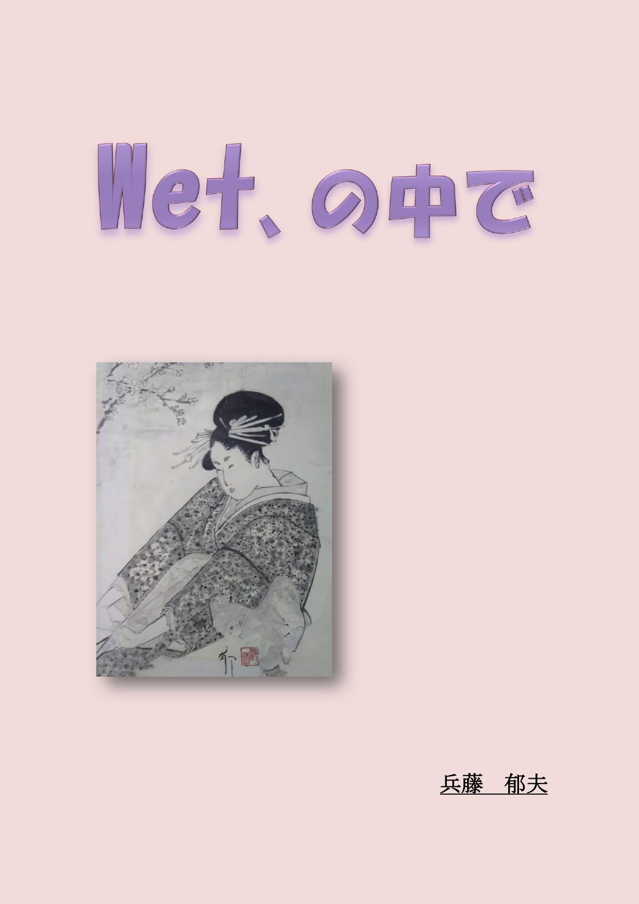

| Wet、の中で | |
| 兵藤 郁夫 | |
| (2019) | |

Wet、の中で
・野尻絵里 大学二年生 水木美々の後輩
・水木美々 春にje・HDに入社したばかりの二十三歳
・木村遥花 高校三年生
・木村多美子 遙花の母親 三十七歳
・西田良美 平凡な主婦 五十八歳
・平井良太 四十五歳
--- あるエリート社員、突然の退職。
骨伝導でも施されたように、内耳の蝸牛が、鮮明な声を響かせてくる。聴力を失ったベートーベンはピアノにつながれた鉄の棒を口にくわえたあごの骨で音を再生させた。男はあらためて口にだして、「俺の人生、これだけのものだった、と考えたほうがわかりやすいかな」と言い、唇の端だけで笑いを浮かべた。貯金通帳の最後の記入欄で目を止める。一括支払いの申告通り二千万円ほどが振り込まれている。使いなれたソファーに体を投げ出し、「なるほどね」小さくつぶやいた。
退職願をだしたとき、「お前なら、定年まで勤めるだけで、この数倍を手にできるんだぞ」と言われた。原田社長からは、「ヘッドハンティングでもされたか？ オレの次の社長はオマエ、と考えてたんだが」と、あらためて言われている。「残念だよ」、と。
男は、ただ、「会社にまったく不満はありません。社長の御指導には心から感謝しています」とだけ答えた。「今は、社長の期待にそえなかったことが、心残りです」
社長は、「・・・そうか」とだけ言ってデスクの退職願に目をおとしていた。突然の申し出に会社中が戸惑っていた。直接の部下からは、送別会の話さえでなかった。
理解してもらえるとは思っていない。言い訳をしようとも思わない。
「俺は、結局、この部屋から出なかった、ってことか」
ゆっくりつぶやいて十五畳ほどの、必要なもの以外は置いてない居間全体を見渡した。このマンションを買った二十年ほど前には、当時の先輩から、「結婚して子供でもできれば買換えだな。すぐだろ」といわれた。「立地条件は良いし、投資物件としては悪くないよナ」と。そのときは、なにげなく、「そうなんでしょうね」と答えている。本来、物欲も金銭欲もあまり強いタイプではない。社長のイスにも興味をもてない。最年少役員という肩書も、結果としてついてきただけ。ただ、技術者として目の前にある仕事に熱中してきただけの二十数年。
二十年たった今でも、このマンションに不満はない。現在通帳に記載されている二千万以外に、どれだけの定期があるのかを、あらためて調べる気にもならない。毎月の、給料から天引きのかたちでの自社株買い。その関係ではじまった証券会社とのつき合い。それは単に、売り買いの作業を楽しんだ、だけ。パソコンの中の残高がどれほどの金額になっても、そこに生活感などあるはずもない。しかし証券会社の若手がアドバイスを受けにくるほどの成果をあげている。もしかしたら、この男にとって、株の運用がただ一つの趣味だった、のかもしれない。
今となれば、少なくとも中年の独身者の生活の心配はない、それだけのこと。
「・・・仕事ばかりをしてたってことか」
つぶやいて通帳をテーブルに放り投げた。そして、「デ、これから、どうしたいのかな」目立ちはじめた目の下のシワをなぜながら笑った。「オレは・・・」白髪も目立っている。
壁に若いころに買った絵がかかっている。部屋には、まったく不釣合いの白と黒だけの浮世絵。買ったときには、この絵のどこが気に入ったのかわからなかった。しかし一度も、あの位置から動かしたことはない。はずさなかった理由に気がついたのは数か月前。水墨画は、どこか湿っぽい。みょうにウエット。逆に言えば、この年までドライの中で生きてきた、と。
「・・・とりあえず車を買うことから始めるのかな」
壁の絵からテーブルのパソコンに目を移して小さく笑った。「やっぱりスポーツカーがいいのかな？」言いながらノートパソコンのカバーを開く。購入する車種を選ぶため。この男の四十五歳にして、初めての車選びは、思いのほか楽しいものだった。
------こんなことがおもしろいなんて、考えもしなかったな。
会社勤めのころはひとり言を言うようなタイプではなかった。しかし最近では多くなっている。退職で他人の目を気にしなくてもよくなった？ 吹っ切れた？ これからは好きに生きる？
なにより善人である必要がない。
------どっちにしても、これはこれで悪くない。
あらためて内耳の蝸牛で誘いの言葉が響いた。鮮明に。〝善人である必要はない〟、と。
--- はじめての家庭教師は、少しだけほろ苦で。野尻絵里の場合。
夏休みも終盤になっている。それは受験をひかえた学生にとっては志望校を決められる追いこみの季節。夏休みで偏差値をあげられない受験生は志望校の下方修正をせまられる、という現実は、ほとんどの受験生にストレスを強いる。
「これママのお手製なんだよ」
持ち込んだテーブルが部屋をせまくしている。遙花が、ベットにおいた御盆の、シナモンの香りが漂うシフォンケーキの皿を取ろうとして体をひねると、絵里の目の前に女子高生の胸のふくらみがきた。明らかに自分より大きい。
「先生、知らないの？ 今、はやってるんだよ」
正面に向き直った遥花が妖しい目を見せ、絵里はわずかなため息になった。「面白いらしいよ。家庭なんて簡単にバラバラになっちゃうんだって。でも表ざたにはできないし、って」
「先生はよそうよ。二歳しか違わないんだからさ」
現実感のない、先生、の響きが、どこか落ち着かない気分にさせている。「・・・で、もしかしたら、遙花チャンもやったの？」引き気味に口にしてみた。
「アタシはやってないよ。ウチの学校で流行ってるだけ」
遙花が、シフォンケーキを一口ほおばりコップのスムージーを音を立てて飲む。「ヤッパ、ママのケーキは店のよりおいしいよね」どこにでもある十七歳の顔で笑った。絵里にとって初めての家庭教師のアルバイト。それも、まだ二回目。お互いを分かり合うこと自体はいいことなのだが、恋愛話は苦手。と、いうより絶対的な経験不足。始末が悪いことに、それを見抜かれているから、休憩時間になると、おもしろがって恋愛の話題をもちだしてくる、と。
新米の先生もオレンジジュースとシフォンケーキを交互に口につめこみながら、「・・・面白い、って」とだけ言って次の言葉を探した。そんなものがある訳がない。十七歳と十九歳の、わずかな年の差。しかし、ずいぶんオバさんに思えてくる。
「最初は男子生徒なんだって。カノジョさんの家に遊びに行ったときにママに誘惑された、って。その子が、こういうのを親子どんぶりって言うんだぜ、って自慢したからまねをしたがる子がいたのネ。でも男の子たちはうまくいかないけど、女の子なら簡単に、そういう関係になれるんだって。男ってバカだからサ、誘うと簡単にのってくるって、中ボウの男子も四十歳のオヤジも一緒なんだって」
ずいぶん早口になっている。止まらなくなった感じ。女子高生にはよくあるパターン。絵里は、「そういう話はクラスにひとりいると全員がやってるみたいな雰囲気になっちゃうからね」笑って見せると、すぐに、「ソ、だね」と、かえってきた。背伸びもつかれる、そんな感じ。ワンテンポおいて、「先生、彼氏いるの？」とスムージーのグラスをお盆においた。これなら等身大の話題ではある、のだが。
「・・・残念ながらいません。今は」
遙花は、「かわいいし、スタイルもいいのにね。奥手なんだ」絵里の顔をのぞきこんできた。完全に主導権をとられている。「高校卒業したのに髪も染めてないしサ、きっと勉強ばっかしてた子なんだネ」あっけらかんと笑った。
「遙花チャンの方はいるの？」
少しばかり大人ぶった顔をつくってみせた。お気に入りのピアスが揺れた。ただひとつのおしゃれのアイテム。返事は、「今現在は、出会いがないから、ってだけよ」予想どおりの返事だった。絵里と同じ、口だけ女子のタイプ。もっとも絵里の場合は大学にはいっても進化はなし、ではある。友人からは、女子高生からの二年の変化は早い、とアドバイスされているのだが、野尻絵里にはあてはまらない法則らしい。
こんな時の解決策はひとつしかない。「おしゃべりはこれくらいにして続きをやろうか」残ったオレンジジュースを口に流しこんでお盆にのせる。
遥花が、「先生、かわいい」家中に響くほどの笑い声をあげた。
------まったく！
そのとき、「いつまでおしゃべりしてるの」の声と同時にドアが開けられ多美子が顔を出した。そして、「そんな話ばっかしてると、モテない女ふたり、みたいだよ」と笑いながらケーキのさらとグラスをお盆にのせて取り上げる。そして、そのまま、「がんばってよ」とだけ言って部屋を出て行った。
ふたりが閉じられたドアに向かって、「ハ−イ!」と答え、遙花は声を落として、「ママがアタシを生んだの、先生の年なんだよ」今度は小さく笑った。完全に仲間扱いになっている。これでも、一応先生なのだが。といっても家庭教師だが。
「お母さんも、二十歳前の結婚じゃ、遊ぶヒマがなかったんじゃないのかな？」
せめてもの抵抗を口にした。遙花もまた、「そうだよねー」興味なさそうに答えた。母親の若い頃のなど姿など想像さえできない。そして、「いい大学に入ったからって、だれにでも彼氏ができるわけじゃなさそうだけど、がんばりますか」と続けた。
「それって私のこと?」
絵里には、すでに反撃の実弾は残っていない。「・・・だから、今はいない、ってだけなんだって」言いながらタブレットをオンにした。しかし、モニターにならんだ公式に、またしても気分が滅入った。数学はあまり得意ではない。
一時間ほど後。
絵里が居間に顔だけを突っ込むと、奥のダイニングで多美子が夕食の支度をしているのが見えた。「終わりにしま---す！」と声をかける。「シフォンケーキとオレンジジュース、ママさんの手作りなんですって。とてもおいしかったです」
ダイニングの奥の厨房から、「お疲れさま」と、帰ってきた。「水木さんがいい人を紹介してくれてよかったわ。遙花、塾の夏期講習で成果があがらなかったから」
遥花が、「そんなことないって。夏休みはみんな頑張るからサ、こんなもんだって」絵里の横で甲高い声を上げた。絵里は、「まだ夏休みが終わったわけじゃないし、がんばってると思いますヨ」すこし大人ぶった返事を返した。「初めての家庭教師ですけど、私も楽しくやってます。紹介してくれた水木先輩に感謝です」
「それならいいヨネ。遙花も楽しくやってるみたいだし」
どこか影のある笑い顔が大人を感じさせる。「明日、会社で顔を合わせたら、野尻さんが感謝してたヨ、って言っとくね」
「水木先輩が、私たちの大学の先輩で部長さんの平井さんって人に頼まれて紹介した、って言ってましたけど、その部長さんって人、紹介してくれたあとje・HDさんをやめちゃたんですってね」
多美子は、「そう、平井部長、とつぜんやめちゃったのヨ。水木さん、何か言ってた？」対面タイプの厨房の中で顔だけを絵里のほうにむけた。顔に料理の湯気がかかって、みょうに色気がある。そうでなくても、娘の遥花もそうだが、この母娘はしっとりとした雰囲気がある。話し方もおっとりとしている。
「近いうちに遥花ちゃんの家庭教師の報告で会うから、その時に聞いておきますネ」
しかし遙花が、「そんなことよりお腹がすいたよ」と話を遮り、絵里は、「それじゃ、失礼します」ゆっくりと背中を向けた。多美子は、もう少し話したそうだったが、「おつかれさま。今度夕飯をごちそうするからね」とだけ言って、夕食つくりの続きを始めた。多美子は栄養管理士であり、je・HDの食堂で働いていて、ママは何をつくってもおいしい、と遥花が言っていた。
絵里が、「楽しみにしてます。それじゃ遥花ちゃん、来週ネ」顔を引っ込め、入れ替わりに遙花が居間に入る。
「ウン、きっと野尻さんの教え方がうまいんだろうね。成績、上がるような気がするヨ」
「そう言ってもらうとうれしいよね。わたしだって、二年前までは、そっちの立場だったから」
本気で、そう思っている。
--- 水木美々先輩は、まるで異星人
今時珍しく、二人とも黒いままの髪。赤い唇の女のほうの髪は肩より少し下まで伸びている。ＧパンにＴシャツの女はショートカット。オーダー品を持ってきたアルバイト風の若者は、さりげなくふたりの顔を見て、〝学生だよな〟そんな顔をした。一声かけたいが言葉が見当たらない、そんな感じ。
「本当はすごく真面目な子なんですよ。遙花ちゃん。なのに、・・・アタシたちの高校のころも、あんな、恋愛話バッカしてましたっけ？」
お気に入りのピアスを揺らしながら、絵里は、喉元で止まっているため息を押さえ込んで水木美々の顔をのぞきこんだ。しかし相手が悪い。すぐに、「アンタが苦手ってだけでしょ。年頃の女の子は恋愛話に夢中になって普通なの」わざとらしく人差し指を絵里に向けた。「受験生って、そんな息抜きも必要なの。家庭教師なんだから、つき合ってあげるのも仕事のうちだヨ」
「ア！ そう。大学でも、今は恋人なんて面倒なだけ、って人が増えたって言いますけど、現実は昔と変わらないんですかね？」
絵里は喉元で止まっていたため息をはきだしながら、体の重心を背もたれ側に移動させた。この社会人一年生は、女子高生や大学の二期生の、口だけ女、と違って、口にするだけの経験を持っているから始末が悪い。たかが二歳しか違わないのに、だ。こんなときは、「紹介してくれた平井さんって部長さん、どうして辞めちゃたんだろ、って遙花チャンのママさんが心配してましたけど、先輩何か知ってますか？」話題を切り変えるほうが賢い。
「平井部長が会社をやめた理由？ そんな、今年のJe・HD最大のトピックスの事情を四月に入社したばかりの新入社員にわかる訳ないだろ」
水木美々は、から揚げとフライドポテトのサラを置いて引き上げていく若者の後ろ姿を見ながら笑った。テーブルには、なぜかふたつのグラスとボトルの赤ワインが置かれている。それにウーロン茶。
「そうですよね。考えてみれば、どうしてママさんは、水木さん何か言ってた、なんて聞いたんだろ？」
絵里はウーロン茶に手をのばした。美々はボトルのワインをグラスにもっていく。口には出さないが、絵里は、このサークルの先輩と話すのは楽しい、自分とは正反対のタイプの女性像。少なくとも絵里は、そう思っている。大学に在籍していたころから、この人は異星人ダ、と思っていた。
美々は、「ホントにわからない人なんだよね。あの人は。今は、自分は結婚不適合者って考えてる若者が増えてるらしいけど。・・・でもあの人の場合は社長の信頼は絶対で、ダントツのエリートコースの人材だしね」平井部長の話題にもどした。言いながらワインブラスをルージュココシャインの唇にもっていく。絵里は、私にもこんな色の口紅が似合うときが来るのかな、と、考えながらグラスの動きを目で追っていた。「女子社員のあいだで、ずっと、だれがモノにするか、って噂されてたらしいんだね。四十五歳になるってのに、ヨ」
「その部長さん四十五歳で独身なんですか？」
「ソウ、でもje・HDに入社してわかったんだけど、性格的には仕事バカでまじめ人間なうえに、みょうにドライな人だから、複数の女子社員に狙われてると、かえって引いちゃうのかもしれないね」
「仕事バカ？ それにモテすぎる人ってことですか？」
方杖をつき、手のひらを顎のあたりに持っていった。「狙ってる女子の方もお互いにけん制してたかもしれませんね」
「そうだね。結構イケメンだし、いずれは社長になるって人材だからね。派閥がらみで上司も部下も注目してたから、本人は、ますます、ばかなことはできなくなるって構図かもしれないネ。ある意味不幸かも」
ワイングラスを口に運ぶ。「少なくとも、あの人が女を嫌いってことはないけどね」意味ありげに笑った。絵里は、大学にいる頃から、この先輩の男の扱いのうまさは聞いている。
------そういえば、その平井さんの口利きでje・HDに入社した、って。
絵里は、「もしかしたら先輩、その平井さんって人と？」探りを入れてみた。
美々は、「男としては平凡なんだけどね」あっさりと答えてきた。「でもアタシには結婚願望はないから」
「それって、平井さんと寝たことがあるってことですか？」
絵里も、あっさりと聞いた。ほかの人が相手だと口にできないセリフも、この先輩を相手にしていると抵抗なく口にしてしまう。「・・・それなら、ヤッパ会社をやめた理由だって知ってるんじゃないんですか？」
「寝たって言っても、あのときだけのワンチャンだし、別につき合いたい訳じゃないし」
言いながらワインのグラスを揺らした。甘い香りが流れ出す。「就活のときに、内定をもらってた会社に教授の推薦をもらってこい、って言われたのね。六月ごろだったかな。その会社、理系の学生を予定より多く取れたから文系を減らしたかったらしいのね。つまり断りたかったのよ。で、教授に相談したら、そんなトコやめてjeＨ・Ｄにしろって、部長の平井がぼくの親友だから。連絡しといてやるって、ネ」人ごとのように言った。美々が言うと、さほど怒っているように聞こえない。
「ずいぶんひどい会社ですね」
「こんな時代だからサ、企業は理系の優秀な人材をひとりでも多く取りたいからね」
「・・・それで平井部長と、ですか」
「なりゆきって感じだね。どっちも積極的にってことはなかったし、やっぱり、なりゆきって感じだよ」
そこで、美々はワインブラスをテーブルにもどし、絵里は、わずかに間をおいた。「酒を飲んだのが間違いだったのかな。平井さんは車を持ってなくて私も電車だから酒を飲みやすい状況ではあったんだろうけど」
------この先輩なら、ありうる話だね。たぶん男が酒に誘いやすいタイプなんだよね。この人は。
「・・・雨が降ってたのね」
遠くを見る目をした。十九歳の女から見ても色っぽい。「霧雨のウエットな雨でね。ドライなイメージしかない男が妙にウエットな感じになったのね・・・」
「先輩にもウエットな面があるんですね。ドライなだけの人だと思ってました」
もちろん本心ではない。しかし絵里には苦手な話題なわけで。「話の分かる教授がいてよかったですね。どなたなんですか」できることなら話題を変えたかった。
「アンタ、ヤッパ、モテない女だよね」
みょうにうれしそうな顔をしている。しかし、「山田教授だよ。知ってる？」と、続けた。
「名前だけは知ってます・・・」
少し安心している。せめて教授の顔ぐらいは思い出す努力をしようとした。たしか体が大きい人と記憶している。しかし、結局、「親友ですか。同期なんですかね」に振った。
「そういえば同じくらいの歳だね。性格やビジュアルは正反対だけど」
美々もまた、少し間をあけた。しかし、「・・・実は、別に、どうしてもje・HDに入りたかった訳でもなかったんだけどね」になった。明るめのルージュココシャインの両端が跳ね上がる。
絵里は、「・・・そう、ですか」と答えた。ほかに言い方が見当たらない、そんな感じ。
「入社してからは顔を合わせても新入社員としてあいさつするだけだったし・・・」
美々は、そこまで言って言葉を止めた。そして、「でもやめられたのは残念かな。なんか興味がわく人だし」と続けながらスマホをいじり始めた。左手にワインのグラス。右手にスマホ。目はスマホに落としたままグラスだけが赤い唇に運ばれていく。
「・・・興味がわく人、ですか？」
「・・・ウン」
美々はひとり言のように言ってグラスをテーブルに置いた。「ヤッパ、ケータイまで変えてるよ。ますます興味がわいてくるね」
「ケータイを変えたって、機種を変えたってことですか？ アドレスを変えたんですか？」
「アドレスに決まってるでしょ。スマホそのものを変えたって、だれも興味なんてもたないよ」
絵里は、「そうですよねー」言いながらフライドポテトに手を伸ばした。この人と話していると、自分のテンポがずれてくるのがわかる。「・・・デ、先輩が興味をもつと、どうなるんですか？」もちろん帰ってくる答えはわかっている。わかっていながら、わざわざ念をおすのだから、なかなかの策士ではある。
苦笑いになって帰ってきた。そして、「わたし、アンタの，そうゆうとこ好きだよ」と言った。
絵里は、「何のことですか」と、わざとらしく首を傾けた。そして、「デ、どうするんですか？」と念をおした。
「・・・どうしようかね？」
細く長い指をワイングラスの上部ですべらせている。「アンタもワインぐらい飲みなさいよ」
絵里はフライドチキンにフォークを突き立てた。「まだ、二十歳になってません！」
「ア，ソウ！」
赤い唇の端がさらに跳ね上がった。「アンタ、まだ男を知らないでしょ」
「先輩，酔ってます？」
言いながらフライドチキンをリップクリームさえ塗っていない口にもっていく。ピアスが小刻みに揺れた。
「平井先輩も私もアンタも結婚って観念がない、って感じね。異性を生活の中にもってこられないタイプだよ。ジコチユーって。今の時代、多いタイプなんだけどね」
「ワタシも？ ・・・いっしょにしないでくれます」
絵里は大きく両手を振った。自分の中に、そんな感じがあることは否定できない。「少なくとも私は彼氏がほしいンですから」苦笑いになっている。「私のことより平井さんの女関係はどうですか。もちろん先輩は別にして、ですけど」わざとらしく言った。
「アンタ、わたしを誰とでも寝る女と思ってない？ それってアンタが世間しらず、ってことだよ。たしかに男の扱いはアンタより数段うまいけどネ」
意味ありげに笑った。そして、「でも、調べてみようかね。面白そうだから。たぶん、少しセックスに嫌悪感を持ってるタイプなんだけど、セックスそのものをを嫌いってわけじゃない、って」
言いながらボトルのワインをグラスにそそぎこんだ。「あるいは女を、心から受け入れない？ ・・・あんなタイプの男の女関係って、どうなってるんだろ、ってね」
「面白そう、って、・・・自分だって、その中のひとりのくせに」
美々は、「そう、だから気になるのよ。わたし自身が抱かれてなかったらホモじゃないかって思うくらい、表面的には女っ気がないよね・・・」そこまで言って言葉を止めた。ふたたびグラスから甘い香りが流れ出してくる。
「心当たりがありそうですね」
「アンタ、鋭いわね」
苦笑いになっている。「ひとりだけ思い当たるんだけどね。その人、日本的というかウエットな感じの人なんだけどね。勘でいうと、女のほうが未練を引きずってる、って感じかな。だけど結婚してるから、ってね」
「不倫ですか。そういう人がいるんですね。会社の人ですか？」
「・・・そう、だね」
言って言葉を切った。「でも、いつかまた話してあげるよ」
こうなると、この先輩から次の言葉は出てこない。絵里は、「そうですね」すこし不満そうに答えながらから揚げを口にもっていった。
--- 西田良美、五八歳の場合は
会員制のホットヨガ・スタジオ。流れる汗で古い皮膚の角質がはがれ落ちていくのがわかる。若いころの肌がよみがえる、そんな感覚が心地いい。良美が、アゴのあたりから滴り落ちる汗を感じながら大きく息をはきだしたとき、インストラクターの、「そろそろ終わりにしましょうか！」声が響いてきた。あらためて、湿気をふくんだ空気を吸いこんで、そのすべてをはきだした。肺が空っぽになった感覚。
ゆっくりと空気を送りこみながら立ち上がると、ふたりをはさんだ先のマットで、同じように立ち上がった若者と目があった。あまり汗をかいていない色白の若者だった。若者は、良美にむかって軽い会釈をしてからタオルを首に巻いて大きく伸びをした。
長袖のシャツだけが場違いに感じられる。
このスタジオが男女混合であり男がいても不思議ではないのだが、若い男がいるのは珍しい。十人ほどの生徒で男は、その若者ともうひとりは五十代後半に見える小太りの男がいるだけ。最も平日の午後であり、働いている者が参加できる時間帯ではない。時間と、少しだけ金に余裕がある中年女の溜り場。亭主を誘ってもついて来ないし、誘おうとも思わない。年金と病院の話が話題の五〇パーセントをしめる、犬の散歩で出会う女たちにしても、せいぜい五歳年上ていど。
それでも人生を百年とすると、まだ四十年以上残っている計算になる。そんな世代。
着替え室から出たのは良美が一番早かった。次の参加者たちが着替え室に入って行きロビーはガランとしている。窓際の長椅子に腰を下ろし、まだわずかに湿気が残っている髪をかき上げたとき、背中から、「お疲れさまでした！」と聞こえてきた。
「初参加で頑張りすぎて」
言いながら若者は長椅子の端に座った。私服も長袖のシャツ。あらためて近くで見ると、ずいぶんきれいな顔をしている。「少しバテました」シワひとつない顔を、わざとらしくゆがめて笑った。ゾロゾロと脱衣所から出てくる中年女たちの視線がふたりに集中している。気分が悪いはずがない。
良美は、「お疲れさま」背筋をのばして笑いかえした。そして、あらためて、「初めてですよね」と、若者の顔をのぞきこんだ。若者は、「初めてです。よろしくお願いします」言いながら窓際に並んでいる自販機を見た。そして、「何か飲みますか？」とつづけた。ポケットから数枚の百円玉を取り出している。中年女には、小銭入れではなくポケットに小銭、がなつかしく感じられる。むかしは小銭入れなど持たなかった。
「私が買ってくるわよ。何がいい？」
言いながら腰を上げようとすると、若者は、「いいですって。気分はレモンスカッシュって感じでしょ？」先に立ち上がった。
良美は、自販機に向かって歩いて行くうしろ姿を見ながら少し戸惑っていた。これってナンパ？ 誘惑？ それとも意識過剰って？ この年になると、戸惑いだけが先に立つ。しかし気分は悪くない。自分でも、五十八歳にしては若く見える、と思っている。若いころには路上で声をかけられた経験も少なくない。しかし、今日の参加者には良美より若い女もいる。
「こんなオバちゃんをナンパしたいの？」
レモンスカッシュの紙カップを長椅子の中間あたりに置く若者の顔をのぞきこむ。良美には高校生になる孫がいる。オバアちゃんではなくオバちゃんと言ったのがわずかな見栄。
若者は、「そんなバカなことはしませんよ」あっさり答えた。「せっかく参加するのに知らない人ばっかじゃさみしいじゃないですか」言いながら自分の紙コップを口にもっていった。湯気が出ている。暖かいコーヒーに、どこか場違いな違和感がある。「ぼく、松本翔と言います。よろしくお願いします」小さく頭を下げた。
良美は、「・・・そうだね」と、笑った。わずかにロビーに出そろった女たちの好奇の視線を意識している自分がいる。私、何を考えてるんだろ、そんな気分。「私は西田良美。よろしくね」レモンスカッシュの紙コップに手をのばした。そして、「こんな時間に、このスタジオに来られるなんて仕事は何をしてるの？」と、若者の顔をのぞきこんだ。
「昼間でも時間が空くことがあるんです」
「暖かいコーヒーが好きなんて喫茶店でもしてるのかな？」
松本翔と名のった若者は、「するどいですね。頭が若いのかな？ ・・・すいません、もちろん、お顔も十分に若いですけど」と、笑った。そして、「次はいつみえるんですか？」と続けた。
「そんなん、ホントにナンパじゃんよ」
良美が、まるで十代の少女のように笑いながらレモンスカッシュの紙コップを口にはこんだ。「ぜったいに教えないからね」
もっとも、このホット・ヨガ教室のプログラムは一週間単位で決まっている。来週の同じ時間に、今日参加したメンバーが参加するスケジュールになっている。もちろんキャンセルはできるが・・・。
松本翔は、「そんなことしません、って！」苦笑いをうかべながら頭をかいた。良美も、「そうだよね。こんなオバちゃんをナンパしてもしょうがないもんね」苦笑いを返した。
並んでドアを抜けると正面の駐車場から熱気がおそってきた。「まだ暑いですね」言いながらセカンドバックからキーをとりだしている。「西田さんは山手線ですか？」
「ウン」
松本翔は、「それじゃ、失礼します」あっさり言って駐車場に向かった。片隅に真新しい白いＵＳＶが見える。
西田良美は、「お疲れさま！」若者の背中が、その車に向かうのを見ていた。
--- そのとき気分は名探偵、絵里
そのマンションは駅のすぐ前にあった。野尻理恵はタイル張りの駅前広場を横切りながら、わざとらしく顔をしかめた。
------なんで私が、こんなことをしなくちゃいけないのよ！
朝、水木先輩から、〝平井さんのマンションを偵察してきて〟と、メールがはいった。しかも、〝駅から五分だからすぐにわかるよ〟のあとに、わざわざ、〝アンタ、男がいないんだから、時間を持て余してるでしょ〝と書かれていた。
取りあえず、〝余計なお世話です！〟と返したが当たっているだけに腹が立つ。これでもコクってくる男はいるんです。こっちが無視してるだけで、と続く文面が頭で渦巻いている。しかし、携帯を見ている笑い顔を想像できてしまうのがくやしくて、やめにした。
それでも、遥花チャンの家庭教師に行く前にすませておくか、になった。時間を持て余している、とか、まじめ、というよりも、好奇心旺盛な女と言った方がわかりやすい。
あれから同級生から集めた情報によると、異性に興味を持たない者が増えている、らしい。理由はそれぞれであり経済的な理由もあれば、仕事をふくめた趣味に没頭して異性にまで頭がまわらない者も少なくない、らしい。それで少子化が問題になるくらい、そんな人が少なくないんだよ。同級生は、日本に限ったことジャないけどね、と笑い、昔にくらべると童貞も処女もずいぶんふえてるらしいよ、と続けた。そのとき絵里は、そんなの青春を損してるだけジャン、と答えている。
もっとも、実は理恵自身が、その中に含まれている、のだが。
------もともと男ってよくわかンないけど美々先輩が絡むと、余計わかンなくなるよネ。
マンションはベージュのタイル張りの外見を持つ縦に長い建物だった。エントランス横に立体駐車場がある。コレ、二階の車は、どうして出てくるのヨ？ そんな感じ。建物は新しくはないが古さも感じさせない。三階までは数えたが、そこで首が痛くなってやめてしまったから、何階建ての建物なのかはわからない。
------確か七階だったよネ。
ポストはロビーの奥まったところにあった。七階のネームプレートに平井良太の名前はない。正確には一か所ネームプレーが抜き取られている。念のためにすべても階を見てみたが、やはり平井良太の名前はない。普通なら、抜き取られた位置に平井良太のプレートが入っていた、と考えるのがわかりやすい。
------引っ越した？ 考えてみれば、会社を辞めた今となったら、je・HDへの通勤に便利なだけのマンションに住んでいる必要はないのだろうけど。それにしては、ずいぶん早いヨネ
奥まったロビーの一画に管理人室のプレートがかかったドアがあった。ノックすると人のよさそうな高齢の管理人が顔を出し、「アンタ、運が良かったね。ボク、めったにいないんだけど」と言って笑った。そういえばプレートの隅に、〟御用の方は、この番号に電話してください〟と書いてある。
「平井良太さんのことをお聞きたいんですけど」
管理人のお爺さんは、「あの部屋は少し前に売りに出されたよ。このマンションは立地がいいから、すぐに買い手がつくんじゃないかな」と言った後、「どうぞ」ドアを大きく開けてくれた。
絵里は、「すぐに失礼しますから」小さく頭を下げて、「・・・平井良太さんの引っ越し先はわかりませんよね？」と聞いた。
「ボク、今はやりの、個人情報の漏えい、なんて気にしたことないけど、本当に知らないんだ」
話好きな顔で笑った。「平井さんはいい人だったね。Je・ＨＤじゃエリートだったらしいけど、そんな感じは見せなかったね。あの人、車を持ってなかったからタクシーを呼んだときは、ここで待ってたのさ」
「車を持っていなかったんですか？」
「両親を車の事故でなくした、って言ってたナ。だから車はあまり好きじゃなかったんだろ。どっちにしても、休みもなしで仕事バッカしてた人だからサ、必要なかったし。でも引っ越す少し前に買ったね。レクサスのＳＵＶだったな。大きくないけど高そうな車だったよ。引っ越すまで置かせてくれって言うから、内緒で空いてる駐車場を使わせてあげたよ」
ドアから出てエントランスの立体駐車場をさした。「結局二日間だけだったけどね」
「女の人が訪ねてきたのを見たことはありませんか？」
「あの人、色男なのに女を連れて来たことはなかったな。働き方革命っていったっけ、今時仕事バッカなんてはやらないけどね」
「スイマセン。あの人、仕事だけが趣味だから」
なぜか絵里が頭を下げた。そして、それからしばらく管理人の世間話につき合ってマンションを出た。
そのまま木村遥花の家に向かう。思った以上に近い。山手線の駅にして三つ。ej・HD本社ビル前の駅からかぞえて四駅目。遙花の母親がej・ＨＤに勤めているのだから当然といえば当然かもしれない。
絵里は玄関まで迎えに出てくれた多美子に、「平井良太さんは引っ越していて、前のマンションは売りに出されていました」と伝えた。多美子は、「そう」とだけ答えてきた。みょうに素っ気ない答えに感じられた。しかし、そこで言葉を止めた。水木美々は、平井先輩の女関係に心当たりがあると、と言った。おそらく女のほうが未練をひきずっている、と。絵里には、それが、この多美子では、と思えた。もちろん、ただの勘であり、簡単に口に出せることでもないこともわかっている。
絵里は、「また、何かわかったら連絡します」と言ったついでに、「水木先輩も、調べてくれるみたいですし」と、言って多美子の顔を見た。しかし顔色に変化は見えない。ただ、もう一度、「そう」とだけ言った。無表情が、かえって不自然に感じられる。おそらくマンションを引き払ったことを知っていた・・・。
------そうなんだよね、きっと。
「何かわかったら連絡しますから」
もう一度言った。もう少し話したかったが管理人さんのお喋りにつき合ったおかげで時間がない。「遙花チャン、もう帰ってますよね」と言ったとき、背中から「ただいま！」と聞こえてきた。
「この間、ナンパされちゃた！」
遙花は、絵里がドアを閉めるのを待ちきれない様子で顔を突き出してきた。「学校帰りにね。ちょっとオジサンだけどかっこいいの」どうやら男の話をするには格好の相手にされているらしい。おそらく学校では奥手でおとなしい女の子。
「ナンパ？ ・・・オジサン？」
突然の告白？ に少し戸惑いながら答えた。
「ナンパって言っても、ママの会社の後輩サンらしいんだけどね。わたしは覚えていないんだけど、昔ママと一緒にいるときに会ったんだって。で、近くおいしい店があるから行こう、って連れてってくれた。高そうな店だった。そこでごちそうになっちゃった」
「その人とふたりで？」
「ふたり友達がいた。三人ともごちそうしてくれたヨ」
「三人？ そんなのナンパとはいわないよ」
遙花が不満そうに突き出していた顔をひっこめる。「・・・だって車で誘われたんだからナンパでしょ。かわいい車だったし」
「車に乗って、その店に行ったんだ」
「五分くらいで着くトコだったけどね」
そこで、わずかに間があいた。頭の中で次の言葉が渦を巻いている。「でも、私の事可愛いっていってくれたよ。お母さんもきれいだけど娘さんも可愛いよね、って」言いながら机の教科書とタブレットをテーブルに移動させた。それでも、まだ言い足りないのか、「お母さん、きれいだからね、会社では僕らはみんな昼飯が楽しみなんだと、って言ってた」と、続けた。十七歳。そんなものだ。
「それ、お母さんに言ったの？」
「言わないよ、そんなの。だって、かっこいい人がママをきれいだって言ってたよ、なんて言ってもしょうがないでしょ」
確かに、ではある。絵里は、「で、アドレスの交換でもしたの？」遥花の顔をのぞきこんだ。帰ってくる返事は想像できる。「・・・してないよ」不満そうな顔で教科書の横にノートを開き、落ち着かない様子でボールペンの頭を何度もノックした。
こうなると絵里は意地が悪い。「どんな車だったの？」言いながらテーブルの正面に座りこむ。「その車で、またいつか迎えに来てくれるといいね」実は、口に出して少し後悔した。
「前にLのマークがついたヤツ。クラスの子をむかえに来る彼氏が乗ってくる車とおんなじ車。そのこがいつも、かっこいいでしょ、って自慢しているから知ってるんだ」
「Lのマーク？ レクサスかな」
------レクサス？
一時間ほど前にマンションの管理人と話題になったばかりの車種。大学の女の間でもレクサスの評価は高い、が。「もしかしたら。同級生の子の彼氏と同じ車だから対抗意識で、乗ってる人もカッコよく良く見えたんじゃないの？」何気なく言って、振り払うように、「・・・そんなことより始めますか」タブレッのスイッチを入れた。
------偶然？ なんかネ。
行き場のない思いが霧の中で見え隠れしている。
--- 水木美々、テクニカルセンター・一課にデビューする。
------この人ぐらいが適任だよね。
美々は、パソコンをオフにして、口紅を塗っていない唇の端をわずかに持ち上げた。何かを企むときの顔。妖しい目をしている。
テクニカルセンター・一課、所属。入社３年目。25 才。独身。吉田平治。この一課が、かつての平井良太直属だった部署。そしてje・ＨＤ技術部門の中心的な部署になる。
ロッカーに行く前にテクニカルセンターのフロアーをのぞくことにした。早々に退社していく女子社員の間を縫ってのぞいた階は一課から三課が独占しているフロアー。残業削減により平均二時間ほど退職時間が早くなった、らしい。基本的には男子社員も変わらない。
美々にとっては、------ちょうどいいや、そんな感じ。もちろん作戦などあるはずがない。総務にくらべると圧倒的に机の数が多く、まだ机に向かっている者が多い。多くの女子社員は退社の支度をしている。あいている机がほとんどないということは、女子が少ないということ。実は、このフロアーに踏みこむのは初めて。平井部長が在職中は、極力、この階には近寄らないようにしていた。
履歴書の写真で見た吉田の顔は一課部分の端の方にあった。何人か男子が物珍しそうに、「何か用だった？」と声をかけてきた。少なくとも敵意をもった声掛けではない。始末が悪いことに美々は、この状況に慣れている。
まったく普通に、「スイマセン、新入社員で勝手がわからなくて、まちがえてしまいました」と愛想笑いをうかべて進んでいく。そして吉田が振り向いて美々の顔を見たことを確認して背中を向けた。
「テクニカルセンターに郵便物を届けてきます」
次の日、昼少し前の時間を狙って申し出た。エレベーターの前で昼食に向かう集団の向かい合う。その中にいる吉田に、「確か一課のかたですよね」と、声をかけた。
「昨日は迷って行ったんですけど、おかげで皆さんの顔を覚えられてよかったです」
吉田にしてみれば、指名で声をかけられて気分が悪いはずがない。「ボクが預かりますよ」郵便物を受け取って振り向きながら、「先に行っててよ」ほかの者に声をかけた。
水木美々にしてみれば、計算どおり、ではある。
吉田のスマホに水木美々からのメールが入ったのは、次の日の十二時少し前だった。〝よかったら、一緒にランチをしませんか？〟
〝もちろん、つき合います〟。吉田からのメールにはハートマークがついていた。
待ち合わせの店は吉田が指定してきた。社員食堂ではなく会社近くのパスタの店。ランチには少し高いイタリアン。
吉田は、「水木さんって会社でスッピンなの？」テーブルに座ると同時に言った。
美々は、「スッピンじゃないんだけど、このほうが固い女に見えるでしょ」と、小さく笑って見せた。どうやら、この女の化粧に対する価値観は一般の女とはずいぶん違うようだ。絵里などは、いつもばっちりメイク、と思っているわけで。美々の場合、化粧そのものが目的ではなく、それぞれのシーンで自分を最も引き立たせる術を知ってる女、そんな感じ。
「実は退職された平井部長は私の大学の先輩なんですよ。平井部長って、次期社長候補だったじゃないですか。で、大学内でも期待されてた人なんだけど、退職されちゃたでしょ」
ゆっくりと言った。水を持ってきた女の子にカルボナーラをオーダーする。「教授から、これからの就活に支障が出るといけないから聞いてみてくれ、って。同じ会社ってだけで、そう言われて、でも私、新入社員で知り合いもいないし・・・」
古田も、「同じものを」と女の子に告げた後、「あの人の退職には僕らもびっくりしたんだ。突然だったから」難しい顔をつくって見せた。
「いい人だって聞いたんですけど、ホントに、そうですか？」
「ホントにいい人だよ。例えば噂通り、あの人が社長になっても誰からも不満は出なかったと思うよ。我々にとっても、派閣ってほどおおげさでなくても、同じ課の我々も出世の期待が持てたのにさ」
わずかに声をひそめている。日本人が噂話をするときのパターン。
美々は、「どうしてやめたんでしょうか？」引き上げていく女の子の後ろ姿を目で追った。なるほどね、という感じ。今のところ、まったく想定通りの返事しか返ってきていない。
「少なくとも仕事上のミスをしたわけじゃないデショ」
わざとらしく吉田の顔をのぞきこむ。
「ミスをするような人じゃないさ」
言ってわずかに間をおいた。次の言葉を口に出していいか迷っている。しかし、「辞めた理由はわからないけど、社長が、あの人を次期社長に考えてたことは確実だね。社長、ときどきウチの課にひょこり顔をだしてたんだ。だけどあの人が辞めたら、ぴったりと顔をださなくなったから・・・」一気に言った。
「社長さんが？」
Je・HDは一部上場の会社である。会社のトップが、重役とはいえひとりの社員のために動くことに違和感が感じられる。「そんなに期待されてたんですか？」
「もっとも部長本人は、社長の座に興味はない、って感じだったンだけどね」
〝あの人〟が〟部長〟にもどっている。どうやら突然辞めた平井はテクニカルセンター部門全体の裏切り者。そんな雰囲気があるらしい。しかし個々では平井の話題はいやではない、そんな感じ。「部長は技術畑が好きでさ、会社がもってる特許の中には部長が考案したものが少なくないんだ。会社からは、部長個人の名前にしてもいいよ、って話が合ったんだけど、部署全員で開発したんだからって会社の名義になってる。それも一定までまとめると後はぼくらにやらせてくれるから、部署全員が理解できるんだ。Je・HDテクニカルセンター部門全体のレベルアップになってた」一気に言った。
「上司としても優秀ってことですか？」
「たとえば、水木くんの部署にも半年に一度のペースでパスワードの変更の要請がくるでしょ。たぶん総務はめんどくさがってやらないと思うんだけど、うちの課は新入社員の仕事になってるんだ。仕事全体を覚えられるから、完全に社長の器だと思わないか？」
まるで自分の手柄のように言う。
「社長の座に興味がない、ってのを社長さんも知ってたんですかね？」
「知ってたと思うよ」
吉田がうなずいたときテーブルにふたつのパスタの皿がおかれた。「つまり、本人は社長なんかになりたくなくて、社長の方はやらせたかったってことだよ」
美々は手前のカルボラーナをひきよせ、「うらやましいですね」フォークを持った。
吉田はウォーターグラスに手を伸ばして、「まったくだよ。ぼくらも、本当にあの人に社長になってほしかったよ」笑った顔が本心だと言っている。そして、出会いの場がない技術系の社員としては、何となく親しく話していられるようで気分がいい、そんな感じ。
「・・・ヤッパ定期健診で悪い結果がでたのかな？」
ウォーターグラスをテーブルにもどしながらポツンと言った。「水臭いよナ」
「定期健診ですか？」
吉田は、「会社の定期健診さ。部長だけ出張に行ってていっしょに受けられなくてサ、結果が出るのにタイムラグがあったんだ」言いながらパスタを口に運んだ。
美々もパスタを口に運びながら、「また色々教えてくださいね」上目使いで笑った。社長からも部下からも信頼されていたのはまちがいない。
しばらく話した後に、吉田は、「今度、合コンヤルから参加してよ」美々の顔をのぞきこんだ。デートの申し込みではなく、合コンのさそい、にふったのが女子が少ない部署の者らしい。
--- 定例の部活のミーティング。そんな感じ。
待ち合わせも前回と同じ店を選んだ。この騒がしすぎず静かすぎない雰囲気がいい、と。少し先のサラリーマン風の三人が好対照のふたりを見て噂話をしている。派手目の化粧とＧパンにＴシャツの化粧っ気のない女。組合せとしては、もっとも声をかけやすいはずの二人組なのだが、実際には声をかけられない。
前回と同じアルバイト風の若者がワインのボトルとふたつのグラスをテーブルに置いた。笑った顔が愛想笑いではない。
「平井さんって、わたしたちが思う以上にエリートだったのかもしれない。Ja・HDにはあの人が発案した特許があるみたいだし。部下からの信頼はぜったいだし」
美々はワインのボトルの先をグラスにのせた。琥珀の液体が流れていく。「社長のほうが、あの人を次の社長にしたがってるらしい、し」
「そうなんですか」
絵里はわずかに間をおいて、「でも、どこか不自然ですね」テーブルに肘をついた。
「そうだね」
テ−ブルに並んでいる物は前回と同じ、鳥のから揚げにフライドポテト。だからといって、特別に美味しいという訳でもない。絵里のまえには、今回はウォーターグラスもおかれている。
ルージュココシャインの唇に赤ワインを運びながら、「それにしても、金曜の夜に女二人で酒を飲むなんて、情けない話」ニヤニヤした。
絵里は、「わたしはお酒なんて飲んでませんけど」フォークをから揚げに突き立てる。
美々が、「平井さんがいた課の子が言うにはね・・・」と話をもどそうとすると、絵里は、「〟子〝って、その人、先輩で年上なんでしょ」と口をはさんだ。
「マァ、そうなんだけどね」
わずかに間があく。しかし、「・・・とにかく、その子が言うには、会社の健康診断のとき平井さんは海外に一か月ほど出張してて診断を受けられなかったんだって。で、しばらくしてから知り合いの病院に受けにいって。・・・その子も部長本人も、今までなら、マァいいや、ってパスしてたのに今回だけは行ったんだって。それで。結果が出たころ聞いたんだけど、問題なかったよ、って答えた、らしいんだけどネ」一気に言った。そういえば昔、アッシー君、という流行語があった。
「健康診断ですか」
絵里は、「・・・どこか気がかりなトコでもあったんですかね？」から揚げを口にもっていった。健康診断そのものに現実感を持てない年代。かわりに、「先輩が前に言ってた、平井さんを好きな女が会社にいる、って、木村多美子さんのことじゃないんですか？」美々の顔をのぞきこんだ。「それでわたしに娘の遥花チャンの家庭教師に行かせた？」
美々は、「恋愛未成熟者のアンタにしてはするどいわね」と笑った。そして、「でも本人に言っちゃだめだよ」と続けた。
「もちろん言いませんよ。言える訳ないじゃないですか」
わずかに間があく。「逆に、木村さんが先輩に遥花チャンの家庭教師を探してくれって言ったのは、平井さんと先輩の関係に気がついたから。・・・つまりジェラシーがあったんじゃないんですか？ あの人が、どこまで意識していたかはわかりませんけど」あいかわらずのピアスが大きく揺れた。
「・・・なるほどね」
ワイングラスが唇から離れたところで止まった。否定しない。左手が顔にかかってきた髪をけだるそうに持ち上げる。「でもわたしは、・・・もちろん、あの人の前では態度には出さなかったし、ただの先輩、上司として接していたつもりだけどね。わたしの場合は、まちがいなく、ただの気まぐれなんだけど、女の勘は鋭いからね」らしくもなく、薄笑いが消えている。
「先輩だって女じァないですか。・・・先輩が平井さんの居所を知ってる、と考えたのかもしれないですね。平井さんのことを本気で好き、で」
美々は、「そうだね」グラスのワインを一気に飲み干した。赤い唇に琥珀色の液体が流れ込んでいく。「彼女が部長を愛してるのは本当だと思うけどね」
「・・・そうなんでしょうね」
絵里は、そこまで行って言葉を切った。不倫。話題としては面白い。しかし両方を知っている者としては迂闊なことを口には出しにくい。わずかに間をおいて、「平井さん、マンションを引き払ってました。それで木村さんは平井さんの居所がわからなくなった。携帯のアドレスも変えてるし」言いながら、テーブルに置いてあるスマホと美々の顔を往復させた。
美々はスマホを見おろしながら、「そんなトコ、だろうね」と言い、絵里は、「やっぱり問題は、どうして会社を辞めたか、どうしていなくなったか、ですかね」美々の顔をのぞきこんだ。そして少し考え、「・・・かりに健康の問題、があったにしても姿を隠す必要はないですよね」ゆっくりと言った。
「姿を隠すっていっても、単純に、je・HDに勤めたなら、通勤に便利なだけで買ったマンションにいる必要はない、ってことかもしれないんだけどね」
ボトルのワインがグラスに注ぎこまれる。ペースが速い。
「それにしては動きが早すぎます」
あいかわらずピアスが大きく揺れている。
美々は、「そうだね」言って間をおいた。「あのマンションって、ほとんど値下がりしない物件みたいだから。平井先輩って、お金には執着してなかったらしいけど、やっぱり経済バランスは優れてた人なんだろうね」このふたりの場合、情報のない話をくりかえしても意味はない、とわかっている。
「今になって逃した魚は大きい、ってことです？」
美々はわずかに妖しい目をした。しかし、「・・・でも、それ以上に得体のしれない男だったってことだね。惜しいってより、改めて興味がわいたって、って感じだね」グラスを口にもっていった。
「先輩、飲みすぎですよ。」
絵里はニヤニヤした。「それに、今日は化粧が濃すぎません？」
美々は「ソウ？ ・・・ストレス気味なのかな」苦笑いになっている。「なんたって金曜日の夜に生意気で酒も飲めない後輩と酒を飲んでるんだからね」
「でも、先輩は関係者だけど、生意気な後輩は、まったくの無関係、なんですけどネ」
「わたしだって、ほとんど無関係だよ。それに、あんたは遊んでくれる男がいないから、ここにいるんでしょ」
ニヤニヤした。もちろん、このふたりが離れた席で噂をしているサラリーマン風の男たちの視線に気がつくことはない。もっとも、もしかしたら美々の方は気がついていたのかもしれない、が。しかし、少なくとも態度にあらわすようなことはしない。
絵里は、「わたしも、髪を伸ばしてみようかな」軽く前髪を引っ張った。
--- 二カ月ほど前、季節は初夏。ホテルの一室。
いつもは多美子のほうが部屋を暗くすることを要求する。しかし久しぶり出会う平井良太はシャワーから出てくる多美子をレースカーテン越しの明るさの中で待っていた。
------今日は、ベットの中でもいつもと違っていた。
しかし、少なくとも、そのときは、疲れてるのネ、としか考えなかった。
平井の前の、ガラスのテーブルにエルメスのマークの入った箱が置かれている。出張のかえりに空港の免税店でかったネックレス。少なくとも安い買い物ではない。もっとも買ったときには、はっきりとした目的があったわけではないのだが・・・。
「木村さんにはご主人がいるんだから、こんな関係をいつまででも続けていちゃいけないと思うんだ？」
ドレッサー上の灯りだけを点けて、化粧をはじめた背中に向かって沈んだ声が聞こえてきた。それは多美子にとって、まったく想像さえていない言葉だった。
「・・・ハイ？」
ゆっくりとふり返える。後方の窓から差し込む光が良太の整った顔にいびつな影をつくりだしている。待ち合わせるとき、いつも良太は一流のホテルの部屋を用意してくれる。海外出張から帰ってからも、仕事に追われたのか、会うのは久ぶりになる。
「コレ、おみやげです」
テーブルの箱を多美子にむけてわずかに移動させた。「木村さんに似合うと思って買ってきました」
体の関係も、すでに十年近くなる。それでも平井は木村多美子を下の名前で呼ぼうとしない。多美子には、ほかの多くの女子社員にように、将来の社長夫人の座を狙う、という意識はない。最近では夫への罪悪感もうすいモノになっている。
十年の年月は、何も知らないまま成人式前に子供を産み、引っ込み思案で既婚者の、三七歳の多美子に、大人の男と女の関係を、居心地のいい居場所、現実感を持たない、つかの間の時間に変えている。相手は，会社中のほとんどの独身女社員が憧れを持って見る男。ふたりの間にある決め事は〟避妊〟だけ。
「・・・どうしたの？」
鏡の中で、塗り終わったばかりの口紅が指の先で小さくふるえている。「なにかあったの？」ゆっくりと立ち上がった。「今のままでいいんだよ。ワタシ、何にも望まないよ。良太さんが気が向いたときだけ会ってくれれば、それでワタシは満足なんだよ」この女らしくない、甲高い声になっている。
良太は「わかってます。木村さんには、本当に感謝してます」ゆっくりと窓の外に目をむけた。
「ほかに女の人ができたんじゃないよね」
多美子は良太の正面のソファーに座った。「仕事の関係とか。出張のあと何かあったとか。社長になるには、女とのトラブルはご法度だ、って言われたとか」一気に言った。まだ、体の中に肌の温もりが残っている。
「違います。すべてぼくのワガママです」
ひとり言のようになっている。そして、「どうやら、少しナーバスになってるみたいです」と続けた。視線はレースカーテン越しの窓の外に向けたまま。
多美子は、「やっぱり疲れてるんだね」ただ、横顔を見た。こんなとき、みっともないほど騒ぎ立てられない自分がもどかしい。「落ち着いたらゆっくり話しましょう」
「・・・少し、母親の気持ちを理解してみようと思って」
「お母様って、良太さんが中学に時に亡くなった？」
追いかけるように言った。あかわらず視線はレースカーテンにむけたまま。
「・・・ぼくの人生、それだけを引きずってきたようなものだから」言いながらエルメスの箱を前に押しだす。
多美子は、「落ち着いたらでいい、もう一度話を聞かせて」あらためて言いながら箱に手をのばした。
そして。
平井良太がje・HDに退職届を出したのは、それから、わずか十日ほど後。多美子には、ランチタイムの社内食堂のざわめきの中で〝それを知った〟でしかなかった。
「平井部長が辞表を出したんだって！」
「まさか！」
「いつ！」
「なぜ！」
ひそひそ話は食堂に充満していた。
その、十日のあいだに多美子は一度だけ平井と言葉を交わしている。といっても食堂に来たときに一言立ち話を交わしただけ。
「部長さん、娘が家庭教師を探してるんですけど。だれかいませんか？」
平井は、「今年、大学の後輩がje・HDに入ったから彼女に声をかけておくよ」と答えてきた。それだけだった。
翌日、水木美々が、「部長に言われました。一度、後輩の子を連れてお宅に伺います。サークルの後輩で、いい子だから気に入ってもらえると思います」と言ってきた。そして、次の日に家に野尻絵里を連れてきた。
------あまりのも流れがよすぎる？
多美子には、そう思えた。エルメスの小箱を受け取ったときから、いやな予感はしていた。あの箱は化粧箱のすみに置いたまま。ふたを開けたこともない。
------もしかしたら、あの女が・・・。
しかし、トントン拍子に家庭教師の件が進んだのは、単純に水木美々と野尻絵里と性格からくるものだった。
そして今日、je・HDの食堂は〟平井部長の退職〝でいっぱいになっている。「・・・どうして部長がやめたの？」食堂中でヒソヒソ話の波が終わることがない。
多美子は厨房の隅で水木にメールをいれた。〝平井部長が会社をやめたんだって？ 何か知ってる？〟
水木から帰ってきたメールは、〝知りません、私も驚いてます〟だった。次に平井に電話を入れた。かえってきた返事は、〝メッセージをどうぞ〟だった。そして次の日には、〝このアドレスは現在つかわれていません〟に変わっていた。もちろん電話がかかってくることはなかった。
--- そのとき、男が選んだ生き方は・・・。
平井良太は、真新しいレクサスUXの少し重いドアを閉めて小さく笑った。
------運転できるもんなんだな。
四十五歳にして初めて買った車はSUVになった。そしてレクサス。どうやら世の女たちは、この組み合わせを好むらしい。ネットで調べる前はスポーツカーかなと思ったりもしたが、そうではなかった。
この男には、両親を車の事故で亡くした、という潜在的な車不信ある。しかし、それ以上に、車なんてカーシェアリングのほうが合理的、と思っていた。だから通勤に便利な駅前のマンションを買った。実は、最初は、いつ海外赴任になるか分からないから、だったのだが。契約するとき不動産業者は、この駅前のマンションなら借り手はいくらでもいますよ、と自慢そうに笑った。しかし、会社から海外赴任の声はかからなかった。噂では、社長が後継ぎは手元に置いて育てない、だったらしい。本音を言えば海外赴任に憧れがあったのだが。無意識のうちに、社長の目の届かないところで生活したい、そんな思いもあったらしい、と気がついたのは最近のこと。
ずっとドライな生き方に疑問を持たなかった。少なくとも会社では。
さほど広くない庭の手前で造園業者が身長ほどもある薔薇の木を植えている。通常なら木を植えかえるときは、先のことを考えて花などは切り落とすらしいが、今がキレイならそれでいい、と、三色の花つきの薔薇を植えるように依頼した。その先の庭全体が芝生になる予定。彼らのトラックとは別に、道路脇に二台の車が置いてあるということは建物の中で作業をしている者もいるのだろう。良太は建物を見上げながら満足そうに笑った。こんなことは初めて。今までに、自分の物で手に入れて嬉しいと感じたことなど記憶にない。工事は一週間ほどで終わりますよ、と聞いている。しょせん居間と寝室しかない小さな建物だ。
伊豆の高級別荘地の中の一画。不動産屋で提示された中古物件の中では一番小さい物件を選んだ。その代り、レストアには金をかけるようにと、要望をだしてある。一流ホテル並みの内装を、と
--- 合コンにデビューする野尻絵里。血液検査、そして大学病院
野尻絵里は、夏休みが終わった今でもTシャツ以外を着たことがない。もちろん単純に、楽だからから、なのだが。家ではジャージ。登校はTシャツにGパン。化粧も、普段はあまりしない。当然色気はない。多くの同級生たちは、男をつくるために化粧をする。絵里は、男がいないのに化粧をしてもしょうがない、と考えている。
おしゃれと言えるアイテムはピアスだけ。中学のとき、フェルメールの真珠の耳飾りの少女のモデルに似てる、と言われてからピアスにだけは興味を持っている。しかし真珠のピアスを買ったことはない。
突然の水木美々からのメールは、〝平井部長が行った病院は寺井クリニックらしいから、アンタ調べといで〟だった。当然、返信は、〝寺井クリニックなんて知りませんよ〟になった。不覚だったのは、なんで私が・・・、に頭がいかなかったこと。
〝会社の吉田って子に合コンに誘われたから、アンタ、代わりに行っといで。メンバーに寺井クリニックの看護師がいるから。おしゃれと化粧をきめて、うまくやりなよ。場所と時間は決まったら連絡するから〟
絵里は、罪のないスマホをにらみつけてため息をついた。平井が行った病院が寺井クリニックだという情報も吉田が合コンで聞きつけてきたのだろう。そして、同じメンバーで合コン組むから水木さんの参加してよ、と言われた。しかし自分は行きたくないから絵里にまわってきた。そんなところだろう。
「まったく！・・・ホントにあの人二十二歳なの？」
狸ババァー、と？ しかし返信メールは、〝未成年者だからお酒は飲みませんよって、しっかり言っといてくださいね〟になった。
会場はイタリアンの店だった。三人が向かい合わせで座れるボックスタイプ。それを簡単な仕切り板がかこんでいる。なるほどね、という感じ。真ん中の男が一番よく喋る。おそらく、この男がまとめ役。そして水木美々が嫌いなタイプ。絵里の正面が、何度か話題に出ているｊe・HDの〝吉田さん〟。こちらの女側の真ん中が寺井クリニックの看護師で八神弘子。
吉田は、「水木くんの大学の後輩なんだって。水木くんから、まだ子供で酒をのめないからヨロシク、って聞いてるからさ」顏を突き出した。「かわいいヨネ」
こちらも、なるほどね、という感じ。美々先輩どころか、十九歳の絵里から見ても、この男たちが年上をは思えない。
それでも、「よろしくお願いしまーす！」久しぶりに塗った赤い唇で笑ってみせた。アイラインまでひいている。「合コンって初めてなんですよォ」これは本当。「吉田さんってje・HDのエリートさんなんですってね」言いながらパスタの取り皿を手前に引き寄せる。そして、「平井さんってウチの大学の先輩の部長さんがいたでしょ。退職された。わたし，その人と同じ学部の後輩なんですよ。で、教授が、その人と親しいらしくて、どうしているか聞いてこいって言われてきたんですよ。連絡が取れないらしくて」一気に言った。手は取り皿にパスタを盛り上げている。
吉田は、「水木くんも同じようなことを言ってたね。ヤッパあの人は大学でも期待されてた人なんだネ」言いながら真ん中の席の八神順子を見た。「実はぼくらも心配してるんだけどね」
八神順子はつまらなそうな顔で、「ソウ、夏前に、うちの病院に来たらしいね」コップを持った。すぐに吉田がビール瓶をむける。「でもうちの病院に来たのは二回だけみたい。最初に来たときに血液をとって、二回目に検査結果を聞きに来ただけ。そのまま大学病院に紹介状を書いて、寺井クリニックの仕事はそれで終わり」コップにつがれたビールを一気に飲み干した。そして、「・・・あの人、ja・HDの次期社長候補で独身なんだってね。看護師内で話題になってた。惜しいことをしたね、って」と、続けた。
絵里が、「そのすぐあと退職願いを出したんですよ。病名なんてわかりません？」すぐに言った。
「わかんないよ。わかってても患者の情報を漏らすなんてできないしさ」
三人の女の中では、明らかに絵里が一番めだっている。しかし、スパイとしては、目立ってはいけないわけで。絵里も、それに気づき始めている。
------まったく、美々先輩が、おしゃれして化粧をきめてけ、なんていうから。
しかし大学病院にまわされて、そのまま寺井クリニックには来なくなった。情報は、それだけで十分に思えた。かりに八神順子が、それ以上、を知っても出てくるはずがない。
残された問題は、トラブルなく、この場から逃げだせるか、だけ。ともあれ大盛りのパスタを口にほうりこんだ。そして、「ここのパスタ、おいしいですね」と言い、吉田にビールをむけた。
もっとも、単純に人生勉強と考えれば、これはこれで悪くない。
--- ホントにナンパって？ 西田良美と若い男は
外は、まだまだ暑い。道をはさんだ前方の駅では多くの人が出入りをくりかえしている。世の中の多くの人は、まだ働いている時間。
良美はカルチャー・センターを出たところでロビーを振り向いた。ホットヨガのスタジオは三階。一階のフロアーに残っている生徒はいないことを確認して出てはきたが、それでも、わずかに気になっている。期待とため息が交互に顔を出す、そんな落ち着かない気分。
------たかが冷たいモノに誘われただけなのにサ。
思いなおして駐車場を見ると第二駐車場から、グリルにＬマークがついた白いＳＵＶが左折してくるのが見えた。
------翔くんも気をつかってくれてるのかな？
少し秘密めいた気分に浮ついている自分がいる。髪を、少し明るいカラーに染めてきたというのに、先週は休みだったようで、少し拍子抜けの気分になった。今日の、入口ドアのガラスの中に色白の顔を見つけたときは、その部分だけが絵画のように思えた。そして、その色白の顔は良美を見てわずかな笑いを送ってきた。今日も長袖のシャツをきている。隣のマットが空いているのも偶然ではない、と決めつけた。
松本翔はマットに膝をついたままで、「先週は、どうしても来られなくて」言い訳でもするように笑った。気になったのは、どこか動きがスローに感じること。
シャワーを浴びた後の一階ロビーでは自然な口調で、「今日は外で冷たいモノを飲みませんか？」と言った。
良美は「君は、ホントにナンパするつもりなのかな？」眉間にシワを寄せて見せた。「こんなオバサンを、どうしたいのよ？」
若者は、「だから、そんなつもりはありませんって」両手を大きく振った。「行きましょうよ。ボク、車をまわしますから出たところで待っててください」返事も聞かずに立ち上がった。
レクサスUXは良美の前で止まり、松本翔は車を回り込んできて助手席のドアを開けた。「若いのにずいぶん気が利くのね」言いながら少し高い位置のシートにのりこむ。社内には新車のにおいが充満している。
「新車？」
運転席のドアの閉まる音を聞きながら言った。広すぎない車内の距離感が心地いい。
「ハイ、まだ運転に慣れていませんから、事故ったときは心中ということで」
良美は社内を見渡した。ホコリひとつない車内が大きすぎない高級車を演出している。
「君は、もしかしたらホストクラブの人？」
あらためて、そんな思いが頭をよぎった。考えてみれば、昼間からホットヨガに来られる生活。色白で整った顔。車のことはよくわからないが、レクサスは高級車と聞いたことがある。条件はすべてそろっている。運転席の若者の顔をのぞきこんだ。「アタシを誘いこもうとしてる？」言いながらシートベルトをしめた。「その長袖のシャツの下に入れ墨があったりして」冗談めかして笑った。
「残念でした」
松本翔は車を発進させながら楽しそうに笑った。長袖のシャツを少しだけめくった。わずかな青い斑点がある。「ぼく腕にアザがあって恥ずかしいから長袖がはなせないんです。それに考えてみると、そんな仕事をしてる男に見えるかもしれませんね。でも違います」そして横目で良美を見て、「でも、誘おうとしているのはあってるかもしれません。すてきなかただから」あっさり言った。
こうなると戸惑うのは女の方になる。少なくとも、これまでの五十八年の人生の中で聞いたことのないセリフだったりする。しかし良美は、「ホントに？」笑いながら若者の横顔を見た。
おそらく、五十八歳の女にとって最後のときめき。さらに言えば最後の抵抗。〝お父さんごめんなさい〟のセリフなど頭の隅にも浮かんでいない。
視線を正面にうつす。「・・・ワタシ、主人がいるのよ」
「そうでしょうね」
松本翔の声は、あいかわらず楽しそうに伝わってくる。「でも誤解だけは解いておきますヨ。少なくともぼくは水商売の男じゃありません。で、前に言った店をやってるってのは嘘です。あまりほめられた仕事ではないですけど、株の運用を仕事にしてます。だから、少なくともお金に困ったことはありません。その点だけは安心してください。ぼくは、女を泣かすことだけはしない、と決めてますから」流れるように言った。
良美は、「そうなんだ」体重を背もたれ側にあずけた。町の風景が後方に流れていく。夫とのキスなど記憶にさえ残っていない。
「・・・腕にアザがあるから長袖を着てるんだ」
良美は現実にもどそうとした。シャツをめくった時には青い斑点がアザには見えなかったが、今は、そんなことは頭の隅にも残っていない。ましてヨガをしてるときに感じた、動きがスローのような、の思いなど頭のすみにも残っていない。
松本翔は、「西田さんが良かったら、これから何かおいしいものを食べませんか？」良美の横顔を見ながら言った。そして、「そんなに用心をしないでくださいね。本当にぼくは楽しく過ごせればいいんだから」と、笑った。
「そうだね」
良美は浮ついた気持ちを押さえつけるように言った。「何かおいしいものを食べようか」
「了解。もうひとつ告白すると、ぼく、最近、東京のマンションを引き払って伊豆に中古物件の別荘を買ったんですよ。ただいま改装中。で、いろいろ探索したいから、食事は中間の横浜あたりでいいですか？ もちろん食事が終わったら東京まで送ってきますから」
「横浜か」
窓の外を見た。食事をしても七時くらいには帰ってこられる、と。自分へのいい訳を並べながら、「中華街なんてしばらく行ってないな」つぶやいた。窓ガラスの中の五十八歳が、明るいベージュに染め直した髪を指先でかき上げてる。
「決定ですね」
松本翔は首都高インター方向にレクサスUXのハンドルを切った。
--- 二度目は誘惑？ それともストーカー？ 木村遥花
「どうすんの。エミは志望校、落とすの？」
木村遥花は小笠原エミの横顔をのぞきこんだ。受験生は、二学期の中間試験しだいで志望校を考え直さなければならない。
「遙花はどうよ？」
エミのほうが遅れを感じている。「アタシ、スランプなんだよネ」ため息をついた。
遙花は、野尻絵里の家庭教師の成果かどうかはわからないが、遅れを取り戻した感じはもっている。それでも「そうだよねー」大げさにため息につきあった。
エミが、「もう、ストレス満タンだよ！」と言ったとき、街路樹をはさんだ車道から聞き覚えがある声が響いてきた。
「木村さんたちじゃないですか！」
先に歓声をあげたのはエミの方だった。「ア！ 遙花のママの会社に人ダ。この間はごちそうさまでした」大きく頭を下げた。
白いレクサスUXの下がったウインドガラスの奥で、その人は笑っていた。「きょうはふたりなんですね」すぐにパーキングランプが点灯する。「せっかく出会ったんだから、時間があるなら、今日も、何かおいしいものを食べようよ」
「ハイ！」
やはりエミが先に答えた。言いながら、目は街路樹の切れ目をさがしている。遙花は、「いいんですか？」少し腰を落としてサイドウインドウの奥をのぞきこんだ。夏の終わりを感じさせないほど白い顔をしている。スーツ姿が大人を感じさせた。
「もちろん」
手招きをしている。「時間があるなら、ぜひ、つき合ってほしいな」
エミは、「時間、ありまース」すぐに街路樹の切れ目に向かって走り出した。遙花は跳ねたスカートの裾からのびる二本の白い脚を見ながら後を追った。基本的には母親の真理と同じ性格をしている。違いは、より開放的な時代で育っただけ。
さきに街路樹をまわりこんだエミが助手席のドアを開ける。「おじゃましまース！」ためらいなく助手席に乗り込む。遙花は後席になった。「ヤッパ、新車のにおいはいいですよね」
男はシートベルトをしめなおしながら、「こんなおじさんにつき合わせていいのかな」苦笑いをした。言いながら助手席と後席のふたりを交互に見る。助手席に座った女子高生は下着が見えるほどスカートが短い。
エミは、「いつも子供っぽい同級生バッカ相手にしてるから、楽しいです」甲高い声で答えた。
男のスーツが高級品であることは女子高生にもわかる。「オジサン、いくつなんですか？」
「いくつに見える？」
小さく笑いながらながらパーキングブレーキをリリースする。「今日もお任せでいいかな？」ハイブリット車が音もなくうごきだした。「また会えるなんて思わなかったから名前を言わなかったけど、ぼく、松本翔。君たちのことは何と呼べばいい？」
「松本翔だって、かっこいい！ 嵐の松本潤と桜井翔をたしたみたい」
エミは歓声をあげた。「きっと歳も、あのふたりと同じくらいのなんだよね」
男は、バックミラーをのぞきこんでいる。
「木村さんのことは、何と呼べばいいですか？」
遙花は、突然自分の名前を呼ばれたことに驚いた様子で、「ソッカ、ママと同じ会社の人なんだもんネ」バックミラーをのぞきもこむと男と目があった。
そのとき、「アタシ、小笠原エミ。エミと呼んで！」エミが割って入った。遙花は、「私、ハルカです」言ってシートに体を押しつけた。そういえば以前エミが、父親と、その息子とセックスしたことがある、と言ったことを思い出した。親子どんぶりっていうらしいんだけど、家庭なんて簡単に崩壊しちゃうよ、と無邪気に笑っていた。どちらかといえば、息子のほうがオマケ、という感じだった。
松本翔は、一度バックミラーの中の遥花を見た後、視線を正面にもどした。そして、「さて何を食べますかね」ゆっくりと言った。
エミは、「アタシ、甘いものがいい！」すぐに言った。
その夜。
遙花はベットに横たわってため息をついていた。胸のポケットに、エミから見えないところで渡された、松本翔のアドレスを書いたメモ用紙が入っている。「・・・何なんだろうね」前に三人でごちそうになった時は、カッコいい大人、だけで、深くは考えなかった。家庭教師の野尻絵里にも、ナンパされちゃった、と笑って言えた。単に大人ぶって見せただけ。
ため息の訳の想像はつく。心のどこかにある小笠原エミへの対抗意識。エミは、頭で考えるより行動のほうが早い女の子。「わかってるんだけどね」口に出して胸ポケットからメモ用紙を取り出した。どちらかといえば、大人に興味を持つ子ではなかった。どちらかといえばエミの言う、子供っぽい同級生のほうが自分に合うと思っていた。 しかし、
スマホをとりだす。〝今日はごちそうさまでした〟、手早く打ちこみ送信ボタンの上で指を止めた。
------独身って言っていた。だから不倫ジャないよね。あの人が三十歳だとすると十三歳差カ。芸能界なら十三歳差のカップルなんて、いくらでもいるジャン。
いくつもの思いが頭の中を横切っていく。そして、送信ボタンを押した。
自分の思いが、どこにあるのかわからない。オジサンではあるがカッコいいのは確か。やさしい、これも確か。お金持ち、これも間違いないと思う。そしてエミへの対抗意識。やはり、これが一番の要因だろう、とわかっている。
今あるのは送信ボタンを押した、という現実があるだけ。
------別に返事をくれなくていいからね。
改めて画面を見た。ただのお礼のメール。上半身を起こしてスマホをテーブルに置く。受信音は鳴らない。当然と言えば当然なのだが、妙にいらだつ。あらためてスマホを取り上げて、〝今は、受験勉強がんばるから、大学に受かったら、また、何かおいしいものをごちそうしてください〟と。ハートマークをつけて打ちこんだ。
------イージャン、どうせいつかは、ヤル、んだから、相手なんて誰だって。クラスの半分はやってるんだから・・・。
木村遥花、十七歳。
やはり同じ店。
「いらっしゃいませ！」
すぐに、いつものアルバイト風の若者が注文を取りに来た。なんとなく親しみがこもった声に聞こえる。「毎度です」おどけて言った。同じ店。それも同じ席が空いていたのだから、ふたりにとっても、何となく気分はいい。
テーブルにはから揚げとサラダが並んだ。それにワインのボトル。グラスはふたつ。それにウーロン茶。それでも、さすがに飽きてきたのか生ハムのセットもオーダーしている。
ふたつほど先の席で学生風の男が、こちらをチラチラ見ながらヒソヒソ話をしている。
「先輩って、いつでもかっこよくて、何でもそつなくこなす人だと思ってたんですけど」
野尻絵里は、前回と同じようにから揚げにホークを突き立てながら、水木美々の顔をのぞきこんだ。間違いなく美人の部類に入る顔をしている。「じつは、だれより面倒くさがりの横着もの、なんじゃ・・・？」同性から見ても赤い唇が色っぽい、のだが。「合コンなんて先輩が行ったほうよかったですよ」
美々は、「アンタに言われたくないね。少なくとも私はTシャツとGパン以外の服を持ってるから。大学のころだってネ」合コンなどなかったように笑った。
「アタシだって持ってますよ」
言いながらから、揚げに突き刺したホークを抜き取って生ハムに差し変えた。「だから、ちょとおしゃれしただけで男なんていちころですよ。合コンのときだって、めっちゃモテたんですから。吉田さん、言ってませんでした？」
「・・・ざんねんでした。噂にもなってません」
美々がワイングラスを横にずらして、空いたスペースにタブレットを置く。右手にスマホ。絵里のほうは尻のポケットから取り出したスマホをテーブルの隅に置いた。こちらの左手には生ハムを突き刺したホークがある。
「・・・平井部長、出張に行く前から体調が良くなかったみたいなのね」
言いながらタブレットのスイッチを入れる。「疲れが抜けないって。それでも、あの人、むちゃくちゃ仕事人間だからサ、無理して出張に出かけちゃったのね」
「たしか、一か月ぐらいの長期出張なんですよね。その期間中に会社の健康診断があったんだけど、平井さんは受けられなかったってことですよね」
「ソウ。で、帰ってすぐに病院にいって、そのまま大学病院に回されて結果が出たら、すぐに会社を辞めた。血液検査で何らかの病気が見つかったってことだよ」
「・・・深刻な、例えば命にかかわるような、って？」
絵里は美々の顔をのぞきこんだ。行き所を失った生ハムがホークの先で揺れている。
「そう考えるのが普通だね」
美々は眉間にシワをよせて体重を背もたれ側に移動させ、「もちろん健康診断を受けてたからって、一か月で病状が進行するってことはないんだろうけど・・」ゆっくりと言った。
「・・・仕事人間、ですか」
「ソウ」
左手に持ち替えたワインブラスを口にもっていく。「あのとき、・・・あの人の体のなんか所かに、わずかに青いアザがあったような気がしたのよね」言いながら右手でタブレットを引き寄せた。指が器用に動く。
「青いアザ？ 平井さんとヤッタときですか？ 就職の口をきいてもらうために」
「アンタ、やな女だね。ヤッタなんて大きな声で言わないでよ」
白い指がエンター・キーを押した。口と指が別の生き物のように動いている。
「・・・去年の今ごろでしたっけ」
美々は、「もう少し前だけどね」タブレットを絵里に向けた。「つまり去年の今ごろでも症状が出ていたかもしれない、ってことだよ」
タブレットに、〝白血病の初期症状〟と映し出されている。
「疲れやすくなるんだって。それに体に青いアザが出ことがある、んだって」
指先でモニターの表面をたたく。
「疲れやすくなる？ ・・・青いアザ」
絵里はタブレットのモニターをのぞきこんだ。「・・・そんなときでも仕事人間は、忙しいからの疲れ、ですましちゃうんですかね」
「・・・そうだね。現実に海外出張に出かけてる」
わずかに間が空いた。「何らかの理由で、去年は検査に引っかからなかった、ってことなんだろうね」
「・・・白血病、ですか」
生ハムがリップクリームさえも塗られていない口へと移動していく。「目の前にある社長の座を捨てて会社を辞めたってことは、・・・かなり進行してる、って」視線はモニターに固定したまま。
「そうだね。・・・もしかしたら、それ以前から引き際を探って形跡はあるけどね」
言いながらテーブルのスマホを前に押し出した。写真が映し出されている。
「何ですか？ これ」
絵里がのぞきこむ。ほとんど同時に、「平井さんの〝お薬手帳〟だよ」と答えてきた。ボトルのワインの減るスピードが速い。
「お薬手帳？」
目がテーブルのスマホと、正面の席で赤い唇にはこばれているワイングラスを往復させた。お薬手帳と言われてもピンとこない世代。「どうしたんですか？ こんなもの」
「総務だからね。平井さんのマイナンバーが残ってたからサ」
美々は、いたずらっぽい顔をした。「マイナンバーがあれば、保険証なんて簡単に出てくるもんだね」
「マイナンバーから、・・・自分でやったんですか？」
「わたしにそんな技術があると思う？」
美々はそれ以上言わなかった。「そんなことより、次のを見て」
「ビンクリスチン、プレドニゾロン、ドキソルビジー」
絵里は、スマホの表面を指の先でなぞりながら薬の名を読みあげた。「・・・もしかしたら白血病の薬ですか？」
「ウン、急性リンパ性白血病のVP療法の薬だって」
タブレットを人差し指で軽くたたいている。「その薬の処方箋の出所は大学病院だろ。そして次の写真なんだけど・・・」
絵里は自分で次の写真に移動させた。「クロラムフェニコール？ こんどは何の薬です？」
「抗生物質さ。化膿止めだね」
美々は、今度もタブレットの表面をたたいている。「わかんないのは、その出所だよ」
「処方箋は、整形外科から、になってますね。sun美容外科？」
少し間があいた。突然の参加者を理解できないでいる。「たしか、ここって整形美容で有名な病院ですよね」かろうじて言った。
「そう、整形美容・・・」
実は美々も状況を理解できないでいる。作業は、ふたたびワインのボトルとグラスの往復にかわり、フォークを持つ絵里の手はから揚げを突き刺しては口へと運ぶ作業になっている。ふたりとも、視線はテーブルのスマホに固定されたまま。
「あの人、独身の部長って以上に経済的には余裕があるらしいし」
「会社を辞めるのに、迷う必要はないんですね。で、わかっているのはマンションを売り払って整形病院にいって、姿を消したってことだけですよね」
絵里はテストの答案を出す時と同じ感覚になっている。「・・・ヤナ感じです」
「確実っていわれてる社長の座だって、もともと、本人に執着はなかったみたいだし」
「今ごろ、どこで、何をしてるんでしょう。これだと、白血病の症状も悲観的なイメージしか浮かんでこないンですけど」
口の中のから揚げを無理やりのどに押しこんで、「・・・親とか実家とかはどうなんですか？」美々を見た。
「履歴書に両親は乗ってなかったね。だから、入社の身元保証人は若いころの、今のje・HDの社長になってたネ」
「・・・社長さんが身元保証人？」
絵里は、「そうですか。総務って便利な部署ですね」口先だけで言って、「・・・でも、やっぱり、そんな気がしたんですよ。そんな人がいるんですよね。幸薄い、というか、幸せをつかみけれない運命を背負った人、というか。そんな人が」と続けた。目に涙がたまっている。
「アンタって子は・・・」
美々は、いつもの人を食った言葉、を探した。しかし、「・・・何にしても、今は、あの人を探し出すのが最優先、になるのかね」になった。
絵里は「何だかんだ言っても、先輩、平井さんを好きなんじゃないです？」美々の顔をのぞきこんだ。
「マァ、嫌いなら抱かれたりしないからね」
「そうですよね。少し安心しました」
甲高い声になっている。「その整形外科の処方箋が映っている写真を私のスマホに転送してくれますか。住所と電話番号がはいってるから」自分のスマホを美々のスマホの隣に移動させた。そして、「平井さんの写真があったら、一緒に転送してください」と続けた。目にたまっていた涙は消えている。
それぞれが自分のスマホをとる。写真はすぐに送られてきた。処方箋の写真と平井良太の写真が二枚。
「二枚も持ってるなんて、やっぱり、先輩、平井さんを好きなんじゃないですか」
薄笑いを浮かべて美々を見た。「でもわかるな、初めて見たけど、なかなかのハンサムですもん」
美々はワイングラスで絵里の視線を遮った。
「ハンサム？ あんたも古い女だね。もっとも私もイケメンって言い方、好きじゃないけどね」
ワイングラスの先から含み笑いが響いてきた。「で、整形外科へ行って、どこかいじるつもり？ 確かに胸はもう少し大きい方がいいかな」
「今のところ、この顔で満足してます。胸だって人並みだと思ってますから。でも相談に行くらいはいでしょ」
言ってしばらく間をおいた。およそ世の女で自分の顔に百％ 満足している者などいない。しかし、「先輩は、こうして、いろいろ調べてきたのに、私は何にもしてないんですよね。マイナンバーの持ち出しなんて犯罪だし、もちろん、社員の履歴書だって勝手に見ちゃいけないんでしょ」と、続けた。
しかし、美々は、それにはふれずに、「そうだね。平井さんは私の大学の先輩だけど、ということはアンタの先輩でもあるんだからね」本題を優先した。
絵里は、「それもありますけど、なんだか平井さんがかわいそうになって・・・」ポツンと言った。
「ウン」
ワイングラスを木製テーブルに置く濁った音が響いた。そして、「ワタシ、あんたのそういうとこ好きだよ」いたずらっぽく笑った。
「ただの野次馬根性です！」
絵里は、最後のから揚げにホークを突き立てた。こんなとき、たとえば，ふたつほど先の席にいる学生風の男たちが、いっしょに飲みませんか？ などと声をかけてきたりすれば、その男は頭からワインをかけられるか手にホークを突き立てられるかのどちらだろう。
「先輩って、もしかしたら最初から平井さんに影があるのに気がついてて、それで抱かれたんじゃないんです？」
言いながらスマホの中の平井をのぞきこむ。美々から、返事は帰ってこなかった。絵里と美々の年の差は三歳でしかない。しかし、大人はめんどうだね、と思える。
------二歳年下の女子高生、木村遥花も同じくらい面倒だけどね。
美々は、「あの人から感じる影は、病気のせいバッカじゃないような気がするんだけどね」らしくもなく、ため息をついた。「・・・会社ではシステムそのものでドライなんだけど、ときどきウエットの顔を見せるのね。というよりウエットに憧れてるって顏をサ」最後のワインを口にもっていった。
世の中は夏物処分セールの真っ最中である。こんな季節になると野尻絵里は、来年のＴシャツを買っとかないとね、と考える。まちがいなくオバサンの思考回路。しかし本人は気にしたことはない。
〝暑いヨネ〟、駅から歩道に出ると熱気が一気におそってきた。
------きのうは、先輩にカッコつけて言っちゃたけど、美容外科のドアを開けるのって勇気がいるんだよね。
駅から遙花の家への道を迷いながら歩いている。こんな時、多くの者が行動しない理由を生み出す天才になる。そのあとは、責任感から自己嫌悪になるか、笑って終わらせるかどちらか。理恵のばあい、秀才にはめずらしく、あっけらかんと笑って済ませることができるタイプではあるのだが。
------平井さんの処方箋から大学病院で白血病と診断されたことは間違いないだろうし、SUN美容外科に行ったのだって、命にかかわるような深刻な病気な訳ないジャン。
つまり、行く必要はないんじゃない、と自分に言い聞かせている。しかし秀才だから、行けば行っただけの価値はあるよね、とわかっている。そして、何か見落としていることがあるような。しかし、その答えは霧の中に身をかくして出てこようとしない。だからトボトボ歩いている、と。
------平井さんにご両親か兄弟なんかの家族がいれば行方不明なんて状態にはならないんだよね。だけど、あの人には家族はいない・・・。で、今のje・HDの社長さんが身元保証人になってる、て。
もっとも、わかっていても苦手な話もある。絵里にとって最も苦手なのは恋愛話。その対象が中年の男と女になると〟色恋沙汰〟と言われる。この種類の話題になると、たとえば友人からかりた小説であっても、その本は机の隅に置かれたままになる運命、なのは間違いない。
------アタシには美々先輩みたいに、都合よく関係者が参加する合コンに誘ってくれる人もいないし、持ち出したマイナンバーから、何かを読み取ってくれる男もいないから・・・ナ。
つまり名探偵になる資質を持ち合わせていない。小林少年にはなれるが明智小五郎にはなれない、ということになる。とりあえず・・・。
家庭教師も三度目になると生徒のスケジュールは、ほぼ想像できる。まして二年前には同じ立場にいた。もっとも絵里に家庭教師は必要なかったが。
「・・・お電話したように、勉強の前に、すこしママさんとお話をしたくて早く来ました」
ソファーに腰をおろすと同時切り出した。おそらく十分もすれば遙花が帰って来る。木村多美子は小さくうなずいて正面に座った。「私も水木先輩も平井さんの大学の後輩ですし、ゼミの教授も平井さんの知り合いらしくて心配してるんです」
------ゼミの教授？ 私が専攻しているゼミの教授じゃなくて美々先輩の山田教授・・・。
絵里は、自分で口にしてわずかに戸惑った。おぼろげにヒントが浮かんでいる。しかし多美子が正面のソファーで小さくうなずいている。「・・・失礼ですけど、ママさんは平井さんを愛してらっしゃるんじゃないですか？」と、続けた。うなずいたままの顔をのぞきこむ。「もちろん責めるつもりなんてないです」無言のままの多美子の視線はテーブルに固定されている。「もしかしたら平井さんの変化に気がついていませんでしたか？ ご存知かどうか知りませんが、平井さんは大学病院で診察を受けて、その直後にｊｅ・HDに辞表を出してるんです」一気に言った。こんな時でも反感をもたれないのが絵里の最大の武器。
「会社をやめたのは、・・・体が原因だろう、とは思ってました」
多美子は顔を上げた。「あの人、弱音ははきませんけど・・・」まだ出会って間もない家庭教師が、土足で他人の心に踏みこんでくる無礼よりも、話を共有できる相手が目の前にいる現実の方が勝っている。何一つできないまま数カ月が過ぎている。
絵里は、安心した様子で、「よかった。こんなこと話していいか心配だったんです」と続けた。さらに早口になっている。本音。「ご存知だと思いますが、平井さんには家族もご両親もいません」
わずかに間が空く。そして、「・・・おひとりだけで病気と闘ってるなんて、あんまりか辛いじゃないですか」多美子のうつむいた顔をのぞきこんだ。
「・・・ハイ」
涙をふくんだか細い声だけが響いてきた。「ずっと心配だったの。主人には申し訳ないけど、ずっと頭の中はあの人のことでいっぱいだったの」言った時にはスカートに涙が落ちていた。
「ママさん、涙を拭いてください。遙花ちゃんが帰って来るとまずいですから」
ゆっくりと言った。うつむいた顔が小さくうなずくのを待って、「平井さんの居場所を知りたいんです。でも、たぶんママさんは知りませんよね」と続けた。
「・・・わかってたら、こんなに苦しみません」
ふたたび、うつむいた顔が小さくうなずく。絵里は、「まず、涙を拭いてください」テーブルの隅に置いたバックを見た。汗を拭いたタオルしか入っていない。「遙花ちゃんが帰って来る前に、これからのことを相談しときたいと思うんですけど」事務的に言った。
「そうね」
顔を上げた。「でも、先に顔を洗ってくるね」立ち上がって厨房に向かっていく。話をできる相手ができたことがうれしい。
「まず平井さんの居所を探さなくちゃ話にならないんですけど」
背中に向かって声をかけた。いつ遙花が帰ってきてもおかしくない。「なにか心当たりはありませんか？ どんな些細なことでもいいんです。思い出してください」
厨房から水道から流れ落ちる水音が聞こえてくる。わずかな間がもどかしく感じられる。「・・・前に、je・ＨＤを辞めたらビジネスのにおいがしないところで暮らしたい、なんて言ってたけど」タオルで顔を拭くときのこもった声が聞こえてきた。「去年のくれだったかな？ あの人のことを、次期社長と会社中の人が思ってたけど」声が、どこか弾んで聞こえる。「できることなら技術畑のまま、辞めたいって」
「会社を辞めたらビジネスのにおいがしないところ、って、田舎ってことですかね？ 実際にマンションは売ってますし。・・・去年から体の異変には気がついていたのかな」
「でも、あの人まじめだから。・・・基本的に他人に心を開けない性格だし」
自分にだけ打ち明けてくれた言葉が残っているがうれしい。そんな感じ。「逆に、まじめ人間だから社長や周りの人の期待に答えたかったんだね。だから次期社長の噂も自分から否定しなかったのよ」
「他人に心をへ開けない？ だから必要以上に人間関係をドライにふるまったんですかね？」
「ソウ、思う。ホントのあの人は人一倍涙もろいから」
「ずっとドライな人を装って生きてきたって。・・・一途なんですかね」
平井さんのことは何でも知ってるんですね、を口にはしなかった。「で、病気とわかって生き方を変えたって」
「きっと、生き方の軌道修正をした、って感じなのよ」
「生き方の軌道修正・・・。会社をやめたのが、その、第一歩」
厨房からもどった多美子が正面のソファーに座った。化粧はすっかり流れ落ちているが、それが逆に人妻の色気を醸しだしている。「その軌道修正した生き方って、どんな生き方なんでしょうね」絵里の頭では、〟sun美容外科〝が走り回っている。
------会社を辞めることで、それまでの人間関係を、すべて清算した。そして美容外科にいって・・・。
しかし多美子から、その返事は帰ってこなかった。「心配なのは、別の生き方を選んだとして、次は、その生き方だけに一途になっちゃうこと。あの人まじめだから」
「たとえば、病気をなおすことに集中しない、とか？」
「ウン」
再び多美子の視線がテーブルに落ちている。絵里は、「大丈夫ですよ。人間って、そんなに強い生き物じゃないって言いますから。わたしだったら、ギャーギャー喚き散らして泣くと思いますから」と、笑った。
白血病の症状が最終ステージにあると考えれば、すべて納得できる、と考えている自分が悲しい。すべて自分で決めて実行に移す人・・・。お気に入りのピアスさえ動きを止めている。
テーブルに落ちた多美子の視線は上がらない。居間を静寂が支配したその時、玄関から、「ただいまー！」という声が聞こえてきた。その声は、「もしかしたら、この靴、絵里さんの？ 早いんだね」と続いた。
「お帰り！ 今、来たとこだよ」
その声が響くよりも多美子が立ち上がる方が早かった。ふたたび厨房に向かう。「お帰り！」開いた居間のドアにむかって、「今、野尻さんにコーヒーを煎れようと思ってたとこ。あんたも何か飲む？」と言った。
「アレ、絵里さん、コーヒーを飲むようになったの？ 大人ジャン。男でもできたかな？」
遙花はドアの隙間から顔だけを出して笑った。多美子は、「ア！ そうか。わたしがコーヒーを飲みたいと思ってたから、つい、言っちゃた」あわてて背中を向けた。そして冷蔵庫からオレンジを取り出した。
「野尻さん、今日もオレンジジュースでいいよね」
「ハイ」
絵里は厨房の中の背中に向かって言った後、「遙花チャンたら、オトコなんて、中年女みたいな言い方しちゃて」口を尖らして見せた。「何度も言うように、言い寄ってくる男はたくさんいるんです。わたしが相手にしないだけ」
「だって、今日もＧパンにＴシャツジャン」
「そうか！」
改めてＴシャツの裾を引っ張りながら、------そういえば、昨日、美々先輩のもそんなことを言われたナ。
「ママ、アタシもオレンジジュースがいいな。外はまだ暑いから。着替えたらとりに来るからサ」
言って制服姿はドアの枠から消えた。階段を登るリズミカルな音が響いてくる。
「遙花チャン、やる気になってますね」
「ホントね。野尻さんに来てもらってよかったワ」
「わたしより、もしかしたら、好きな人がいて同じ大学に行きたいとか」
対面の流し台をはさんでふたりの女が目を合わせている。数分前の湿っぽい空気が吹き飛んでいる。先週の家庭教師のとき遙花は、うれしそうな顔でナンパされたといった。相手はje・ＨＤの社員でママの知り合いだと。
------勘弁してよ。わたしは、恋愛話がにがてなんだって。
そんな気分。もちろん態度には出さない。
「なんにしてもやる気は大歓迎です。ジュースはわたしが持っていきますから」
少し前かがみになって声をひそめた。「・・・平井さんの件は、また連絡します」
多美子は、「思いがけなく相談できる人ができて救われた感じだわ」と、小さく笑った。「本当によろしくね」
絵里はオレンジジュースをのせたお盆をもって階段を登っていった。
------たしか美々先輩が平井さんと山田教授が親友だって言ってたヨネ。
思いついたまま頭の片隅にしまいこんでいたアイデアを引っ張り出している。いくつもの思いが頭の中を走り回っている。
------明日、講義の後で山田教授の研究室に行ってみヨ。
ドアを開けると遙花の着替えは終わっていた。
「やる気満々じゃない。なにかあった」
「聞いて！」
遙花はドアが閉まるのを待って顔を突き出した。「アタシ、第一志望に受かったら、あの人とデートすることに決めたの」まったく、この母娘は似ている。ふたりそろって絵里を、話す相手、と決めたようだ。この、ほとんど化粧などしない十九歳の、恋愛話がにがて、など、この母娘の発想の片隅にも入っていないらしい。「ぜったいデートするんだ」
「あの人？ デートするって、このあいだのje・ＨＤの会社の人？」
言いながらオレンジジュースがのったお盆をベットの隅に置く。
「ソウ、また金曜日に会ったの。アドレスも教えてくれた」
「それって待ち伏せてたんじゃないの？」
「違うよ。絵里さんて頭固いよ。運命って言って」
決めつけた。このあたりも母娘で似ている。さらにストーカーなどの言葉を口にすれば家庭教師の仕事に支障がでることは目に見えている。「赤い糸って，言うジャン」
「赤い糸？ 遙花チャンの方が古いよ」
こんな時、反対意見はタブー。野尻絵里、体験ではなく知識から答えを出す作業は得意だったりする。「でも、つき合ってから言ってよね。まだつき合ってないんでしょ」冗談っぽく笑ってみせた。
「ソ、だね」
狙いどおりの返事を引き出したところで、「それじゃ来春のデートのために勉強、頑張りますか」タブレットのスイッチを入れた。
「ソ、だね」
遙花は、同じ返事をくりかえしてオレンジジュースに手を伸ばした。「がんばりますか」
------なに？ この展開。
絵里の中では、なに、どうなってるの、この母娘、という発想には進まない。水木美々ほど器用には考えられない。もちろん母娘の恋愛話が絡み合ってるなどと考えもしない。
------だけど・・・。
「その人、レクサスのＳＵＶに乗ってるって言ったよね。それも新車の。私も、そんな人に誘われてみたいナ」
ゆっくりと言ってみた。帰ってきた答えは、「ママには絶対に内緒だよ」だけ。その返事は、十七歳少女の恋愛のときの定番ではあるのだが。
--- 大学教授は、大男で平井良太の親友で
この時間、校内の中庭はにぎやかだ。アルバイトでもあるのだろうか、帰りを急ぐ者たちや、道端で立ち止まって、これからの計画を立てている男女の間をすり抜けて大股で歩いている。もちろんＧパンにＴシャツで。ピアスがリズミカルに揺れている。
------レクサスのＳＵＶ、か。なんか、ヤナ感じなんだよね。
もちろん、ただの勘でしかない。多くの場合、それも視野が狭い者の勘などは、ほとんどの場合が見当はずれで終わる。今の野尻絵里がそうだ。この女にとって、男と女、に関する視野など閉める寸前のドアの隙間ぐらいしかない。正確には開くときのわずかな隙間、か。
事務局で山田教授が研究室にいることは確かめた。「来てもいいよ」という返事ももらっている。もちろん、「平井良太さんのことで・・・」と伝えたのだから断られるはずがない。
ドアを開くと大男が小走りでこちらに来た。写真で見る平井良太はやせ形で、いかにもエリート、という雰囲気を醸し出していた。逆に山田教授は大きな体を持っている。それでも大学教授という威厳は感じるから肩書はだてではない。
「ワタシ、野尻絵里といいます」
大きく頭を下げる。教授は、「水木くんから聞いてます。ＧパンとＴシャツしか持ってないサークルの後輩なんだってネ」と、笑った。先に立って奥に向かう。「・・・でも、とてもいい子だって」
「水木先輩は連絡をしてくれてたんですね。あの人みたいになれる人はめったにいませんよ」
大きな後ろ姿に言った。背中が、「あの子も、ここに来るときは化粧なんてしてきたことはなかったサ。彼女の中でオン、オフの切りかえができる子なんだね。それでも、十分にきれいな子なんだけど」と、笑った。「きっとあの子が化粧するのは、相手にアピールしたい時だけ、かな」
------わたしと会う時は化粧をしている。それってわたしを意識しているってこと？
うれしいというよりも、大人ってめんどうだ、になった。
「どうぞ。かけて」
デスクの正面に、どこにでもあるような古びたビニール製のソファーがある。教授は尻がソファーに触れないうちに、「彼、白血病なんだって？」絵里を見た。そのまま落とし込むと、その体重に耐えかねた安物のソファーが〟ギシィ！〝と音をあげた。「それで行方をくらましたんだって。・・・何をやってるんだ。良太くんは」
「検査を受けた大学病院から情報は出てきませんから確実という訳ではありませんが」
「個人情報の漏えいには厳しい時代だからね。ぼくらの立場で、状況を考えろ、とも言えないし・・・」
深刻な顔が似合わない顔が眉間にシワをよせている。そして、「キムリアって薬が厚生労働省で承認されたんですよ。公定価格が三千三百四十九万円と高いですが、彼ならは払えない金額じゃない。もちろん保険や高額医療の返還もあるし」と続けた。
「なんですか？ キムリアって」
「白血病のＣＡＲ−Ｔ細胞治療の新薬です。完治率は非常に高いと言われています。それを彼が知らないとは思えないんだが・・・」
少し間が空いた。そして、「・・・やっぱり手遅れってことですかネ」と続けた。
「まだ決まったわけじゃありません」
絵里は正面から教授を見た。自分自身を単純な女と思ったことはないが、目の前にいる授受らしさを感じさせる教授を嫌いではない。美々などは、得体が知れない女、という点でわかりやすい。「平井さんに身内はいないと聞いてますが、どこにいるか心当たりはありませんか？ たとえば老後はどこで暮らしたいかなんて話したことありませんか？ 生まれた場所はどこだか知りませんか？ 今まで住んでいたマンションは、いかにも会社に通うのに便利なだけの、仮住まい、って感じなんですよ」一気に言った。
教授は、まず、「アリガトウ・・・」と言った。そして、「だけど、人に話す時はひとつずつ自分の中で整理して話した方がいいですよ」教師のような言い方をした。「でも、ほんとうにありがとう」
「ごめんなさい。でも、やっぱり平井さんには時間が残されていないような気がして」
「・・・そうだね」
ソファーが、再び〟ギシィ！〝と悲鳴をあげる。「良太くんが生まれたのは山梨なんだけど転居するとしたら、富士山をはさんだ反対側の伊豆の可能性が高いと思う。いつも退職後は暖かいところでのんびり暮らしたいなんて言ってたから・・・」ゆっくりと言った。
「伊豆ですか・・・。そういえば平井さんの知り合いが、会社を辞めたら暖かいところで暮らしたい、って聞いたって言ってました」
絵里が体重を前方に移動させた。もちろん教授のようにソファーが悲鳴を上げることはない。「平井さんは、部長の報酬以上に経済的には豊か、と聞いてます。だとすると温泉が引きこまれているような少し高級な別荘地、とは考えられませんか？」
教授のソファーが、今度は背もたれ側がわずかに悲鳴をあげた。「でも、大きな建物じゃなくて、前のマンションと同じような、こじんまりとしたサイズの」
「そうだね。彼は、物欲はないほうだから・・・」
絵里はスマホを取り出す。教授は立ち上がってデスクに向かった。パソコンのスイッチを入れる。「というより、興味がないことには、まったくの無関心ってことなんだけど」
「普通なら、山梨で育って駅前のマンションで暮らしていた人なら、次は海が見える場所と考えると思うんですけど、たとえば熱海とか。どうでしょうか？」
「・・・そうだね」
「東京とは、ちょうどいい距離感じゃないでしょうか」
「そうだね。寒さは病気持ちの体にはつらいし・・・」
デスクの先から帰ってきた帰ってきた答えは、そこで止まった。寒くなるまで長らえうる病ではないような、と。キーボードをたたく音は止まっている。しばらくして大きな体はソファーにもどった。
「どうです。絞れそうですか？」
「まったくの勘なんですが、・・・たびたび東京に戻ってるような気がするんです。もちろん大学病院での定期診察もあるのでしょうが、そればかりじゃなくて」
木村遥花に声をかけた相手は平井良太。そんな気がしている。Sun美容外科で若返った姿で。もちろん、その目的はわからないが。「だから交通の便がいい場所。例えば、高速のインターが近い場所とかですかね」指が、器用に動き回っている。
「そうだね」
山田教授は、三度目の同じ返事を返した。視線は絵里の指先に固定されている。「・・・君には、少し良太くんのことを話しておいてもいいような気がする」大きな体を前方に傾ける。絵里は、スマホから目を離さないまま、「ハイ」と答えた。
「もちろん詳しくは知らないけど、一度だけ漏らしたことがあるんだ。良太くんの母親は奔放な人だったらしくて、彼はずいぶんさみしい子供時代を送ったらしいんだ」
「奔放ですか」
絵里は、「それは浮気ってことですか？・・・それで女を信じられないところがあって」スマホから目を離さないまま答えた。
「そうなんだろうね。・・・で、彼が中学のときに両親が交通事故でなくなって、生命保険で大学まで出られたけど、ずっとひとりで暮らしてる。それで、大学を出たとき今のje・HDの社長に誘われてje・HDに入社したんだ」
「・・・交通事故ですか？」
「それは間違いないらしい」
そこで絵里はスマホから目を離し、「それにしても、je・HDの社長とは、前々から知り合いだったんですかね。もしかしたら」教授を見た。
「・・・ぼくは、知り合い、とだけ聞いている。その件に関しては・・・」
大きな体が背もたれに移動する。「・・・彼のために、それ以上は詮索しないでほしい」
「そうですね」
ゆっくりと言ってスマホのモニターに視線をもどした。ふたたび親指が器用に動き回る。
三十分ほど後、大きな体の教授は絵里をドアまで送ってきた。教授は「もし、野尻くんに大学院に進む気があるなら、ぼくのトコロにこないか？」挨拶をするために振り返った絵里を正面から見た。
「院ですか。まだ、先のことは全然考えていません」
苦笑いになった。「でも時々遊びに来てもいいですか？ もちろん平井さんのことは、逐次連絡します」
「待ってるよ」
ゆっくりと言った。そして、「本当にアリガトウ」と続けた。
帰りをいそぐ学生たちが行きかう中庭に出たところにベンチがあった。スマホを片手に座りこむ。ためらいなく選んだ先は木村真理。
「やっぱり伊豆にいるような気がしています。で、ネットで最近売れた別荘を検索しました。そしたら一件ヒットして、売れてることを知らないふりをして不動産屋さんに連絡したら、やっぱり、少し前に売れてしまったよ、言われて・・・」
取りあえず報告、のつもりだった。報告順位としては、美々先輩よりも多美子の方が先、そんな気がしたから。もちろん美々先輩も平井に対して本気なのは感じる。しかし、どこまで本気なのかをつかみきれない。
------たぶん、ふたりの性格の問題なんだけどネ。
「あしたは休んでもいい授業だから、行ってみようかな、なんて思ってるんですよ」
実は、食べかけのまま冷蔵庫に残してきたチーズケーキのようで、どうにも落ち着かない。教授と会って、ますます平井良太に時間が残されていないことを実感している。
「野尻さんが行くなら」
多美子はすぐに、「わたしも行きます」と答えてきた。「もし違ってたら、近くの不動屋さんをまわって最近売れた物件を探せばいいからレンタカーで一緒にいきましょう」、と。
「わたし、まだ免許を取ったばかりで高速なんて走れませんよ」には、「大丈夫、わたしが運転してくから」と早口の返事が帰ってきた。「レンタカーを借りられたらメールをいれるから。・・・お願い」
これでは、「ハイ、それでは、明日、そのレンタカー屋さんで待ち合わせますか」と答えるしかない。突然、時間が流れ出した、そんな感じ。
もちろん次に水木美々に電話を入れた。美々は、「アンタ、みょうに木村さんに信用されてるね」と言った。そして、「それがアンタのいいところなんだけどね。行ってといで。でもわたしにも、しっかり連絡しなさいよ」と続けた。
実は、この後、美々も流れ出した時間に巻き込まれることになるのだが、もちろん、今はそのことに気がついてはいない。
--- 突然流れ出した時間の中で登場した人物は、パズルの最後のピース
通常の生活なら大学に向かう時間。絵里と多美子はジャパレンの事務員からカローラのキーを受け取っていた。そのまま首都高速に入り、東名高速に合流する。
重苦しい雰囲気のまま二時間近くをひたすら走り続けた。
レンタカーは、伊豆縦貫道を走っている。絵里は、「次のインターみたいです」グーグルのロードマップを見ながら運転席に声をかけた。多美子は、「そうみたいだョね」言いながら車のナビを見下ろしている。絵里は、「わたし、平井さんに会うの初めてなんですよね」ポツンと言った。
カローラは、社内の重い空気とは関係なく、いたってスムーズに走っている。ネットで見た物件の案内には、インターから十分ほど、と書いてあった。ハンドルを握る多美子の視線は正面に固定されたまま、瞬きさえ忘れているように思えた。窓ガラスを少しおろすと、思ったよりも熱い風が顔に当たった。
「すぐにつくみたいですヨ」
絵里が、スマホを見ながら言うと、多美子は、「でも、食事してから行こうか」ため息をついたように見えた。
「そのほうがいいですよね」
すぐに答えて窓ガラスを上げる。カローラは食事ができそうな店をさがすためにスピードを落とした。
------まだいるときまってないのにサ。
それに、スマホに中はいっている平井良太の顔が、どんな風に変わっているか見当もつかない。それでも木村多美子の思いにくらべたら単純なものだ、とわかっている。
「おなかが空きました！」
わざとらしく言って多美子の横顔を見る。さらに白く沈んだ整った顔が〝女〟を主張している。
伊豆縦貫道を抜けた車中で、絵里と多美子の親子ほど年齢の離れた女たちによる、少しでも問題の先送り、で意見の一致をみた時間より、三時間ほど前。つまりふたりがジャパレンを出た時間と、ほとんど同じころ、こちらも、すくなくとも外見上は親子ほど年が違う男と女が首都高に入ろうとしていた。
実は、この時間には、もう一組が伊豆に向かっている。「もう少しスピードを出しましょうよ」、と。こちらの男と女はまったく色気を伴わないふたりなのだが。それは、もう少しあとの話。
--- 西田良美と松本翔
西田良美は、まだ動きだしたばかりのサラリーマンの群れが闊歩する駅内を足早でぬけてきた。正面の駅前ロータリーの少し先にカルチャーセンターの建物の一部が見える。熱いのは残暑のせいばかりではない。小脇にかかえていた胡蝶蘭の鉢を地面におろした手で、大きな帽子のツバの先をつまんで小さくため息をついた。
きのう松本翔から電話が入った。「伊豆の家の改装が終わったんですよ。で、西田さんを御招待したいんです。だから、明日は教室をさぼって見に来ませんか？」
良美は、「アラ！ じゃ、何かお祝いしないとね」すぐに答えている。
夜、定年退職したばかりの亭主に、「明日はホットヨガの友達とランチしてデパートでもまわってくるね。もしかしたら映画を見てくるからおそくなるかもしれない。食事はいい？」と言うと、人のいい亭主は、「ぼくなら、そこらで食べるから大丈夫だよ。楽しんどいで」と笑った。
朝、クローゼットの中の服で、いちばん目立たないブラウスを選び、下着を新しいモノに替えたとき、アタシ、ナニ考えてんダロ。そんな思いが頭の隅をよぎった。おそらく亭主とキスしなくなって十年以上になる。今までは、そんなもんだろう、と考えてきた。
「・・・五十八歳か」
つぶやいてロータリーの先を見るとレクサスＵＸが入ってくるのが見えた。車は良美の前で止まり運転席からでてきた松本翔が助手席のドアをあけた。これが、見え透いた行動なのはわかっている。わかってはいるが気分が悪いはずがない。「これ、お祝い」胡蝶蘭の鉢を渡すと松本翔は、「ありがとうどざいます」笑って花に鼻を寄せた。そのまま後部のドアをあけてシートベルトで鉢を固定した。新車だからなのか、車内には何ひとつ置かれていない。生活感がまったくない。
残暑い中で長袖のシャツが着なれた感じで違和感なく収まっている。ズボンも含めて、身に着けているすべてが高級品とわかる。
ＵＳＶらしい、少し高めのシートに腰をおろす。転席まわりにも、何もない。先週、横浜までドライブしたときに、「いままで車を持ったことないから、どうしたらいいかわからなくて」と言っていた。そのとかは、恋人ならアクセサリーのひとつも買って自分好みにするんだろうな、そんなことを考えてた。
気のせいか、高めのシートに座のりこむときの松本翔が、少し辛そうに感じた。「どうしたの？ 疲れてるみたいだけど」
「すこし忙しくて。心配をかけてごめんなさい」
言いながら長袖の先を下に引いた。しかし白い顔は笑っている。「でも西田さんの顔を見たら元気が出ました」
「アラ、言うわね。ぜったいにわたしを口説こうと思ってるでしょ」
冗談っぽく言って正面を見た。まだ信じ切れてはいない。しかし心のどこかで期待している五十八歳がいる。顔を見ないまま、「胡蝶蘭ってにおわないでしょ」と続けた。整った顔にはシワひとつない。いつも以上に。自分でも負い目が言葉を固くしているのがわかる。
「そうなんだ」
松本翔は、あっさりと笑ってサイドブレーキを解除する。胡蝶蘭がにおいを持っていないことは知っている。胡蝶蘭に限らずシンピジュームなどもにおいを持たないことは知っている。しかし、このドライな感覚を好きにはなれない。ウエットな感じの菊の方が好きだと知ったのは会社を辞めたころから。
「で、奥さま、今日のランチは何を召し上がりたいですか？」
わずかに気取った言葉を選んでいる。当然答えは、「やめてよ、奥さまなんて」になった。それで緊張感がほぐれる流れ。まるで中年男のような老獪さを感じる。もっとも良美にしてみれば、そのほうが肌触りがいい。答えは、「キミのスケジュールには、何が入ってるのかな？」になった。
「残念。まだ、全くの空っぽ状態になってます。だってふたりで決める方が楽しいでしょ」
ハイブリット車が音もなくうごきだす。腰のあたりにわずかに伝わってくるアスファルトの振動が心地いい。「じゃ、どこかで肉でも買ってバーベキューをしようか？」考えられないほど大胆な提案になった。
「ビールも買って？」
若者は首都高に向かってハンドルを切りながら笑った。「・・・実は本当に疲れ気味なんです。だから、早く家に帰らしてくれるのはありがたいんですが」
良美は、「では、意見が一致したところで、レストアしたばかりの家に行ってのんびりしましょか」わずかに妖しい顔を見せた。
------あの人と同じだ。ふだんは控えめなのに、動き出すととまらなくなる。母も恋におちるときには一途な人だっんだろうか？
今は、この生々しいウエットな空間が居心地いい。
ずっと母を許せなかった。両親の死は事故として処理されている。しかし、事故のときの、人のいい父親の精神状態など今となっては誰にもわからない。確実なのは、両親の死によってひとり息子に多額の生命保険がおりてきたという現実だけ。東京の大学を選んだのは、偏差値だけの理由ではない。東京に出てくるとき山梨の家は処分した。もちろん経済的な理由ではない。
大学に入ってすぐに原田と知り合った。その、当時、Je・ＨＤの若手社員だった現在の社長が母の浮気相手と知ったのはje・HDに入社してしばらくしたころ。それも事故をおこした当時につき合っていた相手、だと。それでも、その男を、ただの上司、として関われたのは、ただ母親を憎んでいたから。
------必要以上に考えなければ、整えられた人生を与えられた。社長が負い目を持っていることも都合がいい。
そう思って割り切って生きてきた。
今は、残された問題はひとつだけ。・・・オレに時間は残されているか？ それだけ。詰めが甘い男だからナ、と。実は、指一本動かすのさえ辛いほどの体。先々週ホッヨガを休んだのは、どうしても体が動かなかった。そのときから痛み止めを服用しなければ動けなくなっている。
視線の端で西田良美が、わずかにウインドウを下げて顔にかぜを当てている。夏のなごりの熱気と都会の雑踏が社内に侵入している。
「実は食料品を買ったことないんですよ。もちろん冷蔵庫はあるんですけど、今はまだ空っぽで」
ハンドルをまわしながら良美の横顔を見た。「だから東京で買っていきませんか？ 向こうに着くのが昼過ぎになるかもしれませんけど」
「そうね」
景色が後方に流れる。良美の頭の中で、絶対に知り合いと出会わない場所、の何か所が浮かんだ。悪い気分ではない。「ジムの人と会うとヤだから少し先でさがそうか」ウインドウをしめながら答えた。
「・・・ゆっくり行きたいですね」
シワのひとつもない顔は、つぶやくように、「ぼく、これからは、ワガママに、のんびりと生きることに決めてたんですけど、ね・・・」と、言って笑った。「今もあいかわらずセコ、セコ生きてます」
「・・・生きてます、って」
良美は、あらためて若者に向き直った。「ふしぎだね、わたしの娘は三十七歳になるはずなんだけど、娘より君の方が、ずっとわたしに近く感じるヨ」
「それは、年齢的にってことですか？」
「なんなんだろうね。仕草や言うことが娘よりわたしに近いような・・・」
若者は、「そうですか」満足そうに笑った。「でも今日は浮世を忘れて楽しくやりましょうよ」
------実は、この人を誘い出して満足していることがセコ、セコしてるってことなんだけどナ。
「・・・浮世って」
良美はこらえきれない様子で笑った。そして、「そうね。楽しくやりましょ」とつづけた。今の、松本翔といる空間が居心地いいことは間違いない。
「運転手さん、おいしい肉とビールがある店を探してね！」
横顔を見た。
こちらも前の日。Je・HD本社。総務課。
水木美々は五時になるのを待っていたように席を立った。絵里から電話がはいったのが一時間ほど前。仕事中でもあり、軽い感じで、行っといで、と答えたが、どこか落ち着かない。本心を言えば、そんなに簡単に見つかる訳がないだろ、なのだが、最後に、同行するのが木村多美子と聞いたのがトゲとなって残っている。
後輩に対しても、〟まったく〝。自分に対しても、〟まったく〟、そんな感じの中にいる。
そして山田教授から電話が入ったのは五時を少し回った、ロッカ---ルームで着替えをしているときだった。大きな体に似合わず、就業中に私用の電話はまずい、という常識はもっているらしい。まして美々はこの春に入社したばかり、と。
------少なくとも、あの後輩よりは常識人だよね。だけど・・・。
電話の要件は、「あした伊豆に行きますから水木くんも会社を休んでつき合いなさい」だった。当然、美々に拒否権はなし。「野尻くんはいい子ですね。日本の未来に期待が持てるよ」スマホから豪快な笑い声が響いてきた。どうやら水木美々でも山田教授にかかれば、ただの小娘らしい。あるいは、かわいい教え子？
「ハイ、わかりました。おつきあいします」
実は、内心では安心している自分をおさえるように、係長はまだいたよね、と考えながらロッカールームを出ると、通路の少し先に高級スーツの人が立っていた。当然、すぐには誰だか分らなかった。入社式のとき、はるか先の段上で喋っているのを見ただけの人。突然現れた人と顔が一致するはずがない。先に出た女子社員たちが恐縮したようすで頭を下げて、速足で通り抜けていく。
「水木さんですね」
原田社長が笑いながら手招きをしている。「すこし聞きたいことがあるんだが・・・」そこにいた女子社員達の全員が振り返る。社長は、「ごめんよ．聞きたいことがあるんだ。大したことじゃないんだ。気にしないで」手をふった。しかし思いかえしたように、「水木さんが、退職した平井部長の大学の後輩って聞いたから少し話を聞きたくてね」本音で言った。そのほうが誤解を招かないとわかっている。
ほとんどの者が、理解した態度で通りぬけていく。「お疲れさまでーす！」、「失礼します！」
「実は、君が平井くんのマイナンバーでお薬手帳を調べたときから気をつけてたんだ」
ロビーまで出たところで声をひそめて言った。「でも、どうやら悪意はなさそうなので、あらためて声をかけないでいたんだけど」
「どうして、そんなことがわかるんですか？」
原田は、「君は、そんなことをわからないで社長が務まると思っているの？」と、いたずらっぽく笑った。どうやら怒っているのではないらしい。美々は、ヤッパ会社にはきちんと化粧してこなきゃいけないね、そんなことを考えながら、「スイマセン！」と頭を下げた。水木美々など、大学教授から見ればただの小娘。それがje・HDの社長なら、なおさら、ということになる。
アルミのパーテーションで仕切られたロビー横の来客用の小部屋のドアを開く。
「・・・本当言うと、きのう山田教授から電話をもらってね」
ソファーの横に立ったまま言った。「座って」後ろ手でドアを閉めて正面に座る。美々は二人掛けのソファーに座った。
「社長は山田教授をご存知なんですか？」
「平井くんの同級生だからね。ふたりが大学に入ったころから知ってる」
初めて面と向かった原田社長は、「山田教授から、水木くんは信用してもいい子だよ、って聞いたけど、それでいいのかな？」正面から美々を見ている。
「・・・平井部長の件でしょうか？」
社長の顔色を読もうとする。しかし、やめた。相手は一部上場会社ej・ＨＤ代表取締役社長。大学を卒業したばかりの小娘に読めるはずがない。「・・・部長といっても、今は会社を辞めてますけど」とりあえず美々がしなければいけないことは、目の前にいる高級なスーツをきた男が、平井にとっての敵か味方か。それを見わけなければ話は進まない。
「山田教授から、信用できる子って聞いた、って言ったよね」
原田社長はいたずらっぽい顔を見せた。逆に新入社員の魂胆の方は簡単に読まれている。「思ったことを、そのまま話してほしい」大きく目じりが下がっている。女としての水木美々から見ると、嫌いなタイプではない。
「はい」
短い答えになった。
「とりあえず課長のほうに、明日有給を取ります、って伝えてきてくれるかな？」
もう一度笑った。「申し訳ないけど公休って訳にもいかないから」
「わかりました」
美々は、また短く答えた。そしてわずかに腰を浮かしながら、「課長、まだ残っていますから、とりあえず出してきます」と、続けた。
「よろしく頼むよ。課長は無条件で受理してくれるから」
原田社長もまた立ち上がる。
「それって、・・・シナリオができてた、ってことですか？」
美々は、少しすねて見せた。分かっている。この場合、ただ、顔を見せるだけで用は足りるということを。
「山田教授が、きっと君たちがいっしょの方がスムーズに進む、って言うから」
「・・・君たち？」
「君と君の後輩くんが面白い子たちだって言ってたよ。こうして会ってみてぼくも納得したよ」
「・・・そうですか」
「教授に、水木くんのボーナスを上げてやるわけにはいかないだろうけど、うまいものを食わせてくれ、って言われた。彼と後輩くんもふくめて、って」
そこで原田社長はわずかに間をおき、「君の後輩くんが推理した平井くんの新居だけど、あってるから」と続け、ドアの取っ手に手をかけた。
「確か、伊豆って言ってました。・・・知ってたんですか？」
原田社長は、「報告をたのむよ」とだけ言ってドアを出た。背中が大きい。
部署にもどって有休願いを出すと、課長は、「平井部長も、いい置き土産を残してくれたようだな」と、うらやましそうな顔をした。
------ 一部上場会社っていっても、内情は、こんな単純なもんなんだ。
「よろしくお願いします！」
美々は、大きく頭を下げた。入社以来初めてとる有給休暇は、それなりに意味のある有休休暇になる・・・？
山田教授は、名前も知らないような古い車でやってきた。後で聞いたのだが年代もののクラウンだという。どうやら教授には、その巨体が収まれば何でもいい、らしい。
美々がのりこむと、教授はまず、「ご苦労さん」と言った。美々は、「だいじょうぶです。私、好奇心旺盛な性格ですから」ルージュココシャインの唇で笑った。
「そうだったね」
首だけをひねって美々の顔見た。「・・・君が化粧をしてるのを見るのは初めてだったかな。さすがに社会人になると違うということかな」大柄な体はシートベルトに固められて動かない？
「大学のときもしてましたよ。女は男をだますのがうまいんです」
「そうらしいね」
教授は正面にむきなおって車を発進させた。笑った顔が大仏様を連想させる。平井良太と正反対なタイプ。ポータブルタイプのカーナビがセレクトレバーの先にある。どうやら生徒に借りてきたらしい。「やり方がわからん、って言ったらセットまでしてくれたよ」ナビを確認して首都高に向かう。「原田社長が住所を教えてくれたからね」
都会の風景がゆっくりと流れていく。
「・・・社長と平井さんって、・・・もしかしたら平井さんのお母さんと・・・」
「原田社長は義理堅い男だから・・・」
「そうですね。きのう初めてお話しましたけど、誠実な人でした」
------もしかしたら原田社長にとって初めての女で？
教授は、「そうだね」とだけ言った。そして、「社長から電話をもらったのは野尻くんが研究室にきてくれた昨日の午前中だったんだよ」と続けた。「そして彼女が帰って後で、あらためて経過報告をしたってわけさ」
「タイミングが良かったんですね。あの子、いつもおいしいトコ持ってくから」
ルージュココシャインのくちびるの端がわずかに跳ね上がる。
「そんな星のもとに生まれた人っているからね」
大仏顔に似合う笑い顔を見せた。君も同じだけど、が喉もとでとまっている。「・・・彼は、両親の不幸以外は順調な人生を送ってきたけど、最後の最後でつかみきれなかったのかもしれない」と言い、「もちろん平井自身の才能があっての話だけど、社長は彼を引き上げたかったんだね」と続けた。
美々は、「あの人はどこか不幸を感じさせる人ですから」窓の外を見たままで言った。「社長は、その責任が自分にあると考えてたのかもしれないです」
教授が、横目で美々を見た。「どうやら、ぼくの社長への進言は正解だったみたいだね」すぐに視線は正面にもどった。「かならずしも平井は社長に心を許していた訳じゃないから、・・・で、この状態になったふたりの関係を埋めるには、駒が足りないって感じを持ってんじゃないのかな。経営者としてのセンスが高い人だから」ゆっくりと言った。
「・・・ですね」
美々は流れる景色から目を離さないまま答えた。美々の場合は本能的に、そのバランス感覚をわかっている。「ところで教授、もう少し早く走れません？」いたずらっぽく笑った。
首都高インターのゲートが見えている。
「まだ十二時になってませんよ。思ったより早くつきました」
松本翔はレクサスＵＸをバックで駐車場に入れながら時計を見た。といっても五分前。道路との仕切りには人と同じほどの高さで、ピンクと赤と白の三色の薔薇が咲いている。それは、一見して植えたばかり、とわかる。
良美は、「予想より、ずっと素敵だわ」ガラス越しに建物を見上げて笑った。新しい板張りの壁の塗装のにおいが残っているように感じる。おそらく、若者のいうインスタ映えするものではないが居心地はいい。
「そう言ってもらえるとうれしいです」
ドアを開けながら松本翔もまた建物を見上げている。ワンテンポ遅れて助手席がわのドアが開いた。
------いつものようにドアを開きに来てくれなかった。そういえば、買い物をしているときも体が重そうだった・・・。
しかし、今の良美に、それ以上を詮索する余裕はない。「今時珍しい平屋建てなんだね」
「部屋数は必要ないから平屋で十分なんです」
松本翔は、「・・・とりあえず、ボク、玄関から入ってテラスの戸を開けますから」いつもと変わらない笑い顔を見せてきた。
良美はため息になった。映画のワンシーンを想像させた。強すぎるほどの薔薇の香りが全身を包み込んでいる。
松本翔は、玄関をぬけて居間の戸を開ける。業者は無臭タイプの壁紙といっていたが、どこか張りたてのにおいが漂っている。広さは東京のマンションより少し広い。ただ、あのマンション以上に何もない。変わらないのは水墨画の浮世絵。正面に飾られている。この絵を見るとどこか落ちつく。
あとは寝室と風呂とトイレがあるだけ。ダブルベットも新しいものにした。急いで洗面所のドアを開け、鏡にうつった顔に青いアザが出ていないかチェックする。数か所に、手早くファンデーションを塗る。体が重い。
小さくため息をついて洗面所をでる。------そういえば寝室のシーツが乱れたままになっている。あの人にシャワーを進めて、そのあいだに取りかえるか、そんなことを考える余裕が生まれている。鎮痛剤が切れて目が覚めたときは、そんな余裕はなかった。鎮痛剤をのんでレクサスにとびのるのが精いっぱいだった。今は、ふたつの目的のひとつが達成目前の高揚感が冷静さと痛みを押さえこんでいる。
横目で寝室の戸を見てから庭を見た。さほど広くはないが、ウッドテラス先に芝生を張ったのもまた正解だと思っている。心残りはカーテンが間に合わなかったことくらいか。高級すぎる布地をオーダーしたからなのか、白血病の進行が、思ってたより早かったからなのかはわからない。おそらくその両方なのだろう。
はきだしのサッシを全開にすると玄関横と薔薇の間から西田良美が顔を出していた。木村多美子と同じ顔をしている。もちろん二十歳ほどの年の差があるのだが、ほとんど変わらないように見える。そして、どこか浮世絵の女にも似ている。
「すてきな家だね」
三色の薔薇の花をバックにして笑っている。小脇に、買ってきたバーベキューセットの箱を抱えている。
「トゲに気をつけてくださいね」
松本翔はスリッパのままウッドテラスから芝生に出た。「ぼくが運びますから、座っててください」
「バーベキューって、準備から楽しいのよ」
段ボールの箱を置く。「スリッパのまま出てきちゃって、子供みたい」大人ぶって笑った。
「そうですね」
言いながらスリッパを脱ぎ捨てる。「これならいいですか？ 西田さんも裸足でどうです？」
「ウン」
良美は靴を脱ぎ捨てた。水分をふくんだ芝が心地いい。まだ植えたばかりの土が柔らかい。「芝生の上じゃ火が落ちたときにかわいそうだね」
「・・・芝生がかわいそう？」
白い顔が苦笑いになっている。「そんなこと考えもしなかったな。すべて西田さんのために造ったものだから」まったくの本心。家もウッドテラスも芝生も室内にある特大のダブルベットも、ただ西田良美ひとりを抱くため、に造ったもの。
------ぼくに残された時間で、間に合うかな、と思ったけど。どうやら、この人だけはなんとか・・・。
「でも西田さんが言う通りかもしれませんね」一歩前に出た。
良美は、「もう西田さんはやめようか。なんだか落ち着かないから」できる限りの笑顔を選んでいる。「良美って呼んで」言いながら松本翔の正面に立って目を閉じた。
そのとき、薔薇の垣根の外側で車が止まる気配がした。わずかに間をおいてふたつのドアが開く音と、おそらく後続車のモノであろうホーンの音がひびいた。しかし、ふたりが、それに気がつくことはなかった。
松本翔の手が良美の肩にまわされる。「良美さん、すきです」それは、木村多美子にさえ言ったことがなかった言葉。触れた唇が柔らかくウエットで、生々しい。まだ生きてい生肉の感触。
「そろそろ行きますか？」
絵里はテーブル越しに木村多美子の顔をのぞきこんだ。あいかわらず青白い顔をしている。いくらゆっくり食べてもざるそば一枚は、一枚でしかない。「ここからは私が運転しましょうか？」それは、ペーパードライバーでも問題ないほどの距離、と。
多美子は、「そうね」とだけ答えて伝票に手を伸ばした。
店から出ると一段と残暑が厳しく感じられた。運転席に座ったのは多美子。レンタカーの中はさらに熱気が充満している。
「・・・みえますかね？」
答えは帰ってこない。動き出したエンジンの振動で動いた空気がさらに室内を熱くする。絵里の言葉は，まったく届いていない。「・・・もっとも向かってる先が平井さんの家と決まってるわけじゃないんですけど」少しだけ、青白い顔に赤みが差したように見えた。
------まったく、女心はわかんないよ。
自分が女であることを忘れて？ 時計をのぞきこむと一時を少しまわっている。ほほをすぎていくエアコンの風を感じながら、「行く前に、少しだけ整理しておきたいんですけど。・・・すごく失礼なことを言うかもしれません。先にあやまっておきます。ゴメンなさい」小さく頭を下げて多美子の横顔を見た。セレクトレバーは、まだパーキングに固定されたまま。返事は帰ってこない。
「わたしなんかには、木村さんが、どれだけの覚悟で平井さんに会いに行かれるかはわかりませんけど、今のあの人は、木村さんが考えてるほどの善人じゃないような気がするんです。今までの生き方をすべて清算している、ような・・・」
ゆっくりと言った。正面に向けられたままの顔は動こうとしない。「あの人が会社を辞めてすぐにしたことは、美容外科に行って、家を買って、車を買いました。白いレクサスＵＸです。そして遙花チャンはレクサスの人に食事にさそわれたそうです。お母さんの会社の後輩だと言って近よってきたって。二回も。もしかしたら最初は同級生がいっしょの時をねらって。そして先日はアドレスを交換したようです。三十歳くらいだったって、言ってました。名前は〟松本翔〝と名のったようです。それって、もしかしたら・・・」
一気に言ったとき運転席のシートベルトから〝カチン！〟と響いてきた。「シートベルトをしめてね」セレクトレバーがドライブに移動する。「・・・前に〟嵐〟のファンだって話したことがあるのよ」
「松本潤と桜井翔ってことですか？」
「・・・あの人，興味がないことには、まったく無頓着だから」
絵里がシートベルトをしめるのを待ってレンタカーはうごきだす。顔が、わずかなピンクいるに染まっている。「でも、わたしが何気なく言ったことを覚えていてくれたのね」
------やっぱり女心ってわかんないよ。
自分だけが知っている平井良太に出会えたことで心に余裕ができた？ 「あの人、ホントにジコチュウ人間なのよね」
「遙花チャンが誘われたことを知ってたんですか？」
「・・・知らない」
車道にでたレンタカーは、ただ直進をはじめる。おそらく十分もすれば到着する。「でもいいのよ。あの人がそれを望むなら、そうすればいいのよ」
絵里は、ただ、「・・・そうですか」とだけ答えた。頭の中に用意されていた、〟白血病の進行状況は、どうってるんでしょうか？ 余命何日ってことはないですよね〟の言葉は、すでにどこかに消えている。
------やっぱり女心ってわかんないよ。だって母娘で、ってことだよ。
駐車場を出てから十分ほど走っている。新しい言葉が生まれてこない車内では、ただ、ため息をこらえてナビを見ているしかない。
「・・・ここらのはずですけど」
言ったとき、少し先に三色の、鮮やかな薔薇が咲いている垣根が見えてきた。その手前の駐車場にグリルにＬマークがついた、白いＳＵＶのフロント部分が目に入った。あわててスマホを取り出す。指先だけでグーグルマップを呼び出しながら多美子を見ると、顔色は、ふたたび白く変わっていた。正確には、さらに青白くなっている。
「ヤッパ、・・・あそこみたいです」
薔薇の垣根の端には古いクラウンが停まっている。多美子は、その後ろにレンタカーをとめてハザードランプのボタンを押した。薔薇に仕切られて内部を見ることはできない。
「どうします？」
絵里は多美子の顔をのぞきこんだ。「行ってみます？」窓ガラスを下ろしたとき、薔薇の垣根の中から悲鳴が聞こえてきた。
「キャー！」
三十分ほど前。
古いクラウンはインターを出たところで、再びスピードダウンした。もっとも伊豆縦貫道内では上限時速七〇キロで、出てからは五〇キロ以下なのだから周りの車に迷惑をかけていることに違いはない。
水木美々が窓ガラスをわずかに下げて伊豆の空気を車内に入れる。「教授にとって車は、その巨体が収まるサイズとよくきくエアコンがあればなんでもいいみたいですね」
「寒いかね。これでもレディーに配慮して高めの温度設定にしてあるんだけどナ」
山田教授は、すまなさそうに笑った。そういえば、首都高のころからさかんにタオルで顔を拭いていた。美々は、風に揺れる髪を指先で押さえながら、「・・・平井さんが末期の白血病であることは間違いないとして、進行状況は本人の想定なんでしょうか？ それとも医者から宣告されてるんでしょうか？」と、つぶやいた。
教授は、わずかに間をおいた後、「・・・原田社長に入った報告だと、医者は彼に、これからは好きに生きていい、と言ったらしい」小さくうなずいた。今まで、横にいる教え子の言葉はリズミカルで心地よく耳に届く場合がほとんどだった。それが今はない。
「・・・そうですか」
美々は、あらためて窓の外を見た。そうなんだろうな、とは思ってはいたが・・・、と。「そんな状況で、人は何を考えるんでしょう」
大柄の大学教授から、「改めて人生を見なおしてみようと考えたんじゃないかな。彼としては、人生の中で、自ら望んで出した結果はひとつもない、と考えてたんじゃないだろうか」ため息が言葉になって流れ出してくる。「良いにつけ悪いにつけ、母親の確執の中で生きてきた、と、あらためて」
「その中で、・・・ずっとひとりで生きてきた人なんですよね」
美々は教授の顔が縦にわずかに動くのを見てから、ポータブルナビに視線をおとした。Je・HDに入社して社内で顔を合わせても、ただの上司でしかなかった。あるいは大学の先輩。抱かれたことを現実のものとして残ってはいない。
しかし、今は会うことに、わずかな不安がある。この二十三歳の場合、こんなことは、あまりない。「その母緒は、・・・唯一の肉親だったご両親は事故で亡くなられて」ためらいながら口にした、そんな感じ。
「良太くんのような境遇の人のばあい、多くが不幸な生涯を送るんだけど・・・」
言ってわずかに間をおいた。そして、「・・・でも、幸い、彼には才能があった。結果的に、少なくとも表面的には、誰からもうらやましがられる人生を歩いてきた、けど、・・・それが彼の限界だった。いくつもの要素がからまって、たとえば結婚にも臆病になって、他人をよせつけないまま生きてきて、いつのまにか、彼自身が、それが運命だと考えるようになっていて・・・」
万年筆でレポートを書くときのペースになっている。そして、「これから良太みたいな人間が増えるんでしょうね。自我とは少し違うんだけど、人のつながりが薄くなって、子供をつくるよりも〝自分〟を優先する人が増えて、地球全体で少子高齢化が進むんでしょうね。今はやりの言葉で言えば〟ジコチュウ〟な人間が増えるんですね．ぼくから見ると、視界がせまい者たち、ってことだけど」講義のときのペースになった。「少なくとも先進国では、この流れが二十一世紀前半のスタンダードになるでしょうね。ＩＴが、その流れを、さらに推し進めるんです。地球は、これから数十年で百億の人口になるとレポートされてますが、おそらく七十億の人口でも地球の許容範囲をこえてるんですよ。昔は戦争で人口増が制御されてきたんだけど、現代では、それができないから」大学教授の顔をしている。
「そんなの・・・」
美々には、自分に、その自己中心の感覚があるのをわかっている。同類、と。「人恋しくなかったンですかね」
教授は、「寂しさは、当然ありますよね。人間の気持ちは公式では割り出せないですからね」さらにクラウンのスピードを落としたように感じた。タオルで額のあたりをぬぐっている。
「そうですよね」つぶやくように言ってから、「・・・そろそろでしょうか？」ダッシュボード下部にセットされたポータブルナビから正面に視線を上げるのと、ナビが、〝目的地です。左です〟と告げるのが同時になった。
数メートル先に、フロントグリルに誇らしげにＬのマークをつけた白い車が見える。クラウンのスピードが、さらに落とされた。赤、ピンク、白、の薔薇の花。そして肥料をたっぷりと吸い込んだ濃い緑の葉。鮮やかな四色のコントラストで仕切られた垣根が現実離れして感じられる。
「いることは、間違いないと思います、けど」
教授の、汗臭いタオルがダッシュボードに放り投げられ、美々はいっぱいまでガラスをおろした。止まる寸前の車体が垣根の横を通りすぎていく。中は見えない。そして、きれいに刈り込まれた薔薇の垣根からは、生活感がつたわってこない。〝まさか孤独死？〟そんな思いが浮かんだが、すぐに追い出した。少なくとも、そんな透明感が漂う空気で包まれている。
「・・・静かですね」
美々の声も小さくなっている。こんなところで声をひそめる必要はないのだが、どうやら、これが日本人の習性らしい。あまり動じることのない美々でさえ緊張している。年代もののクラウンのエンジンがわずかな振動のあとで活動を停止した。
「行きますよ」
教授が声をひそめながらドアを開ける。思った以上に手荒くなった。その時、ホーンを鳴らした後続車が急ブレーキをかけてクラウンの横を通りぬけていった。
「もう！ 教授ったら、気をつけてくださいよ」
玄関横の庭への抜け道のアルミ戸は開かれたままになっている、きれいに刈り込まれた薔薇は美々の背丈ほどの高さがある。教授が、体を小さくして教え子のうしろについている。
芝生にはバーベキューの絵が描かれた段ボールの箱が置かれていた。そして、その横のテラスで抱き合っている男と女が目に入った。
美々と山田教授の声が、ほとんど同時に響いた。
「平井さん？」
「良太くんなのか！」
そのとき、
西田良美は、弾かれたように男から離れ、そのまま無言で居間にかけこんでいく。行き場を失った平井良太の体は、尻からタイルの床に崩れ落ちた。今の平井にとって招かざる客。想定外の事態は、そのまま死への階段を上がるような脱力感をともなっている。しかしファンデーションで覆われた肌は白いまま変わらない。
「・・・お前たちか」
上半身だけをひねって女がかけこんだ居間を見る。「・・・まったく、としか言いようがないな」
山田は平井に駆け寄り、美々はスマホを取り出していた。良美は居間のサッシから顔だけをのぞかせている。状況を理解できないでいる。
薔薇をバックに、「平井先輩、救急車をよびますか？ 教授の車で東京の大学病院まで行けますか？」悲鳴に近い声が響いた。大きな体が倒れた体をのぞきこんでいる。
「いつも自信満々だったオマエが、なんて情けない顔をしてるんだ！」
平井の顔には脂アセがにじんでいる。「もう、痛み止めはモルヒネレベルの症状なんだろ。持ってるのか？」
「・・・とつぜんお前たちが現われなきゃ、こんなことにはならなかったんだよ」
平井は苦しみの中で笑い顔をつくって見せた。「スマンな。薬は寝室の机の中にある」緊張の糸が途切れたことでいっきに痛みが襲ってきた。
「できたら東京の大学病院に行った方がいいんだが、我慢できるか？」
「救急車を呼んだら地元の病院になりますからね」
美々はスマホを持ったままふたりの顔を交互に見ている。平井は、「・・・どっちでもいっしょだろう」とつぶやいた。「なにをバカなことをやってるんだ、と笑ってくれればそれでいいさ」
突然の侵入者のふたりは、ひと目で平井良太の状況を理解した。理解していないのは最年長の西田良美だけ。実年齢でも最年長が、カーテンのないサッシのガラスで体を隠すように三人を見ている。手がブラウスの胸元おさえている。
「体をふくタオルと薬を飲む水をお願いします」黒髪が目の前を走り抜けていく。
寝室の戸を開くと中は寒いほどだった。エアコンが動いている。大きなベットの厚手の羽毛布団は乱れたままになっている。シーツには大きなシミ。おそらく大量の寝汗。
------もしかしたら、すでに痛みで眠れない状態になっている？
寝室から、「水で濡らして固く絞って西田さんにお願いします」叫ぶように言った。
「ハイ」
良美が、弾かれたようにサッシの影から出る。ふたりが〝松本翔〟を〟平井良太〟と読んでいることの意味さえ、現実のものとして理解できないでいる。コップに水を入れたとき、横に黒髪の女は来ていた。奪うようにコップを取っていく。タオルは見当たらない。あわてて洗面所に向かう。
「教授、上半身を起こしてくれますか」
美々は、起こされた体の口に無理やり錠剤をおしこんで、その上からコップを押しつけた。
「無茶するなよ。病人だぜ。自分で飲める」
油アセで光る顔は悲壮感をみせようとしない。どうやら、最後まで新井良太でいたいらしい、と。教授が、「とにかく車に乗ろうか。立てるか？」背中に手をまわしたとき、正面に西田良美が正面に座りこんだ。手に絞ったタオルを持っている。「松本くん、どうなってるの？」言いながら顔にタオルをあてた。
------そういえば、絵里が、華花チャンをナンパした男が松本翔と名のった、と言っていた。それに、このヒトは。
美々は、「ゆっくり拭いてあげてください。もしかしたら痛みがあるかもしれないですから」新井の顔をのぞきこんだ。良美が、ゆっくりと顔にタオルをあてる。ファンデーションの下から出てきた顏は、まるで死人のような色をしていた。
「キャー！」
ほとんど同時に平井良太が、「西田さん。ごめんなさい」と言った。そして笑い顔をつくって見せた。「どうやらぼくは最後まで運命に翻弄される運命のようです」眉間のしわが痛々しい。どうやら、遙花ちゃんにもふられたらしいと。
山田教授は、「おれたちは、おじゃま虫だったか？」と言った。最後まで平井良太のスタイルを通す、ことにつき合う気になっている。「・・・立てるか？」
平井は、「少なくともお前はおじゃま虫だな。水木くんには、じゃまをする権利があるが」美々を見てわずかに笑った。
そのとき、薔薇の間からふたりの女が飛び込んできた。平井良太にとって、二組目の招かざる客。
「お母さん？」
多美子はタオルを持っている女に言った。「どうして、ここにいるの？」。そして平井良太を見る。「良太さん、その顔は？」
それは、若い顔の驚いたのか、それともファンデーションが拭き取られた部分にあらわれた青い肌色に驚いたのかはわからない。おそらく本人もわかっていない。ただ、目の前にある現実を理解できないでいる。
「そんなことより、急ぎましょう」
絵里と美々が、ほとんど同時に言った。「教授！」
「・・・アア」
山田は、右手で平井良太をかかえて立ち上がった。絵里が反対側にまわって支える。「原田社長が、お前に理解してもらうにはタレントが足りない、と言ってな」絵里と美々を交互に見る。「どうだ、この美女ふたりは？」
自力だけでは立ち上がることさえできないことを知った男は、「女を信用できないまま生きてきたオレに女を語る資格はないさ。その中でも水木くんは、今まで知らなかったタイプの女だよ。〝クール〟って単語が似合う。こちらのお嬢さんも同じなんだろ。オジサンの手におえる人たちじゃない。オレは・・・」言いながら立ちつくしている木村多美子を見た。「やっぱり木村さんといるときが一番安心できた。生身の湿っぽさが居心地が良かった。でも、それだけで満足できなかったのだから情けない話サ」
絵里が、「・・・後は病院で」と言い、美々は、「東京まで行くならタクシーを呼びましょう。きっと教授の運転より半分の時間でつく」と言った。すでにスマホの上で親指がおどっている。
平井良太は、「木村さん、本当にありがとう。そして西田さん、ごめんなさい。今となるとバカなことしなくて良かったと思ってます。遙花チャンには、松本翔なんてないよ、と言っておいてください」と言って目を閉じた。体重のすべてが山田と絵里の肩にのしかかる。薬がきいてきた。
「タクシーは十五分くらいでこられるみたいです。部屋で待ちますか？」
美々は平井のうつろな顔をのぞきこんで、「とんでもないことを企んだんだけど、最後はカッコよくまとめた、みたいな・・・」小さく笑った。
山田教授も、「良太くんらしいよ」笑った。
二週間ほど後の金曜日の夜。季節はすでに秋。いつもと同じ店。
「今日は化粧をしてないんですね」
「色気のない後輩に合わせることにしたんだよ」
ふたりの掛け合い漫才を聞きながら、いつものアルバイトらしい若者がテーブルにから揚げとワインのボトルとおき、わずかに間をおいた。そして、「ワイングラスはひとつでいいですか？」絵里の顔を見た。
絵里は、「わたしも飲んでみようかな」美々を見た。
美々は、「大人もいいもんだよ」意味ありげに笑った。若者は、「かしこまりました」うなずいてグラスをふたつ置き、真ん中にサラダの盛り合わせと生ハムの皿を置いた。
絵里の声がひきあげていく若者の背中を、「わたしたち、声をかけてくれる男がいないわけじゃないからね」追いかける。若者はふりかえって、「でしょうね」と笑った。けっこうイケメンではある。
美々は、「わたしたち、じゃなくて、わたし、だろ」ブラウンに染めたばかりの長い髪をかき上げた。
「わたし、先輩のことをすごく大人だと思ってました」
ピアスがこきざみに揺れる。「でも、たぶん違うんですよね。男の好みが普通の二十三歳の女と違うだけ。わたしに分かるのは、たぶんモテるんだろうな、ってことくらい」
美々は、「ソウ」ボトルを手もとにひきよせて笑った。口紅とアイシャドウをしていないからといって化粧をしていないと考えるのは、おおきな間違いだ。
「マイナンバーからお薬手帳まで持っていった人ってどんな人ですか？」
顔をのぞきこむ。「若いとお薬手帳という発想に行かないです。逆にただの中年だとマイナンバーからお薬手帳にたどり着けるほどコピュータを使いこなせる人はそれほど多くはないですよね。たとえば平井良太さんみたいな人は。お葬式の時に遠くから山田社長さんを見ました。お薬手帳を出してくれた人も、あんな感じな人たちじゃないンですか？」一気に言った。
「人をファザコン女みたいに言うなよ」
美々は、苦笑いになった。言った相手が野尻絵里だと怒る気にもならない、そんな感じ。「大人の方が相手をするのが楽だろ」言って、わずかに間をおいた。そして本題に入った。
「あの人のご両親、・・・地元の永代供養のお寺に安置されてるんだけど、あの人も、同じお寺に入れてくれ、って言ったんだって」とワインのボトルを手に持った。そのまま手元のグラスにワインをそそぎ、ついでに、もうひとつのグラスにも入れた。
「そうですか」
絵里は、ワインが入ったワイングラスには手をつけず、いつものようにから揚げにホークを突き立てた。「よかったですね」
「何がよかったって？」
「いろいろ。・・・葬式は原田社長が取り仕切って、たくさんの人が参列してくれてたし、それなりに充実した人生だったんじゃないですか」
「そうだね」
「マンションにあった家具なんかも全部処分していて、・・・もともと何もなかったらしいんですけど、あの家にも何もなくて、物欲がないというより、平井さん自身に、そこまで考える余裕がない人生で・・・」
そこまで言って、から揚げを口に運ぶ。「これも、山田教授が言ってました。もっと余裕を持って生きられれば、違う人生になってたのに、おしいことをしたよナ、って」
肌色の唇にワイン運ばれていく。「このままひとりっ子の家庭が増えると日本は永代供養の墓バッカになる、って。親子で永代供養の寺の隣同士のタナにいる、みたいな」
「・・・現実にわたしも兄弟いないわけだし」
「わたしもひとりっ子です。だから、わたしが子供を産んで、その子が野尻の姓でなかったら野尻家は消える運命です」
「アンタのばあい、かなり、希望的観測だね」
どこか自嘲的な笑い声が響いた。「これからは、もっと、結婚しない女も増えるだろうしネ」
「わたし、お葬式のとき、ずっと木村のママさんと一緒にいました。あの人、いっぱい泣いたからもう大丈夫、って言ってました。遙花チャンには、平井さんのこと話してません」
「その方がいいだろうね。若さ、って武器があるから。・・・もしかしたら後を引くのは六十歳近い年のお母さんかも。その年で目覚めちゃうと後がつらいかもしれない。人生百年の時代だからさ、まだ半分近くの人生が残って計算だから」
ゆっくりと言った。「四十年の間にはシンギュラリティーって世紀のイベントも経験しなきゃいけないし」
「なんですか？ そのシンギュラリティーって」
「コンピューターが人の知識を追い越す時だよ、二千四十五年ころって言われてる」
「そうなんですか。すぐじゃないですか」
そこで、絵里は見えすいた笑い顔をつくった。「・・・それも、お薬手帳の人に教えてもらったんですか？」
絵里は、「バカ」と言い、ワイングラスに手を伸ばした。「アンタも早くバージン捨てな」見えすいた笑い顔につき合う。
「ヤッパ、先輩，元気がない。・・・マジで平井さんを好きだったンですね」
あらためて言った。
「だから、嫌いなら抱かれない、って言っただろ」
ボトルをワイングラスのふちにのせる。「アンタも飲みな」
「そうですね、未成年だけど、今日は特別、ってことで」
絵里は、グラスを顔の前にかざした。「化粧をしてないけど、きょうの先輩、きれいです」
「アンタ、ヤッパやな女だよね」
水木美々もグラスを目の前に持ってきた。そして「先輩に！」わずかにグラスを揺らす。絵里は、「最後までハンサムだった大先輩に」同じようにグラスを揺らした。